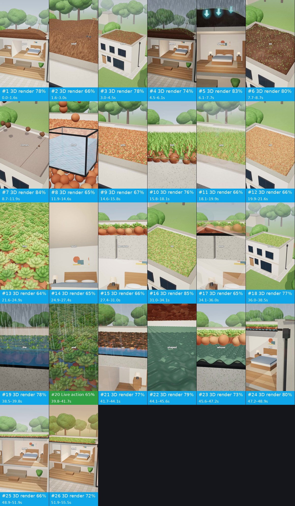
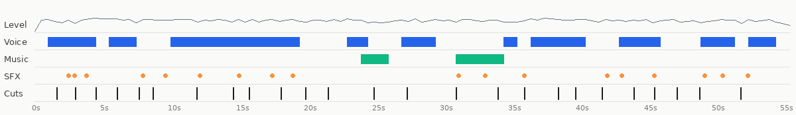

How this video was made
How a green roof is really built, told as a chain of failed attempts: soil too heavy → light clay pebbles → grass dries → sedum → roots leak → root barrier → flooding → drainage cups.
Mixed production: 3D render 96% + live action 4%
- Confidence 72%, based on: tool measurements + AI assistant reviewed 26 shots
- ⚠️ 2 points are uncertain, see “Open questions”

Breakdown: how this video is built
What makes it work
- The hook: 0-6 s: you shovel soil onto your roof, and one storm later tonnes of wet mud sit above your bed (cutaway shows the bed under the load).
- Five problem→fix loops in 55 s, each closing with a new layer of the roof
- A cutaway with the bedroom always visible keeps the stakes personal
- Everyday analogy: drainage sheet 'shaped like an egg carton'
- Payoff ties back to the hook: the bedroom stays cool, the roof waters itself
Production pipeline at a glance
| Stage | What this video uses | Remake approach |
|---|---|---|
| Base picture | 3D render 25 shots (96%), live action 1 shot (4%); includes real material in 1 shot (4%) | filmed in 1 scene; AI in 7 generations |
| Packaging | styled text ×1 (large size, tilted, multi-colour / gradient): "E"; text label ×95 (2 of them follow an object): "shovel", "roof", "grow", "garden", "and", "storm" …; SFX hits on: text label in ×12, cut ×1 | export packaging/overlays.ass for timeline alignment |
| Sound | voice（TTS voice-over）, 10 distinct effects (18 hits) | voice: TTS voice-over; effects: add from a library at the listed times |
Content and structure
Narrative line
Keep this line in a remake: same order, same job at each step, with the point refilled from your own cases, numbers and material, so it is more than a change of subject.
| Time | Shots | Job | What it says |
|---|---|---|---|
| 0.0–1.6s | #1 | grab attention | You shovel soil onto your flat roof to grow a garden. |
| 1.6–4.5s | #2, #3 | add information | You shovel soil onto your flat roof to grow a garden. |
| 4.5–6.1s | #4 | grab attention | And one storm later, there are tons of wet muds sitting above your bed. |
| 6.1–8.7s | #5, #6 | add information | And one storm later, there are tons of wet muds sitting above your bed. |
| 8.7–11.9s | #7 | — | So the soil comes off and you spread a thin layer of baked clay pebbles that sta |
| 11.9–15.8s | #8, #9 | add information | So the soil comes off and you spread a thin layer of baked clay pebbles that sta |
| 15.8–18.1s | #10 | turn | You plant grass, but that thin layer dries out fast and the lawn turns brown. |
| 18.1–19.9s | #11 | add information | You plant grass, but that thin layer dries out fast and the lawn turns brown. |
| 19.9–21.6s | #12 | turn | So you switch to see them. |
| 21.6–27.4s | #13, #14 | add information | Tiny succulents that keep water in their fat leaves. |
| 27.4–31.0s | #15 | turn | Next spring, the ceiling starts dripping because the roots crept into a seam in |
| 31.0–36.0s | #16, #17 | add information | Everything comes up again and down goes a rubber sheet that roots can't get thro |
| 36.0–38.5s | #18 | turn | Then a summer storm floods the roof. |
| 38.5–39.8s | #19 | add information | Then a summer storm floods the roof. |
| 39.8–41.7s | #20 | turn | The water can't drain and the seeedum starts to rot. |
| 41.7–48.9s | #21–#24 | add information | So under the pebbles goes a plastic sheet shaped like an egg cartton. → Whose cups hold a little rain and let the rest drain away. |
| 48.9–55.5s | #25, #26 | deliver the conclusion | Now, the bedroom below stays cooler all summer and your roof is a garden that wa |
Script (local speech recognition, unchecked; trust on-screen subtitles for names and homophones)
all 13 lines
| Time | Who | Line | Delivery |
|---|---|---|---|
| 0.0–2.8s | narration | You shovel soil onto your flat roof to grow a garden. | measured: rate fast (3.9 words/s), wide pitch movement, lower than this speaker's other lines |
| 3.2–7.4s | narration | And one storm later, there are tons of wet muds sitting above your bed. | measured: rate normal (3.3 words/s), wide pitch movement |
| 7.8–14.3s | narration | So the soil comes off and you spread a thin layer of baked clay pebbles that stays light even when it's soaked. | measured: rate fast (3.4 words/s), wide pitch movement, higher than this speaker's other lines |
| 14.7–19.7s | narration | You plant grass, but that thin layer dries out fast and the lawn turns brown. | measured: rate normal (3.0 words/s), wide pitch movement |
| 20.0–21.4s | narration | So you switch to see them. | measured: rate fast (4.3 words/s), flatter than the other lines, higher than this speaker's other lines |
| 21.8–24.7s | narration | Tiny succulents that keep water in their fat leaves. | measured: rate normal (3.1 words/s), wide pitch movement |
| 25.1–30.6s | narration | Next spring, the ceiling starts dripping because the roots crept into a seam in the roof looking for water. | measured: rate fast (3.5 words/s), wide pitch movement |
| 31.4–35.6s | narration | Everything comes up again and down goes a rubber sheet that roots can't get through. | measured: rate fast (3.6 words/s), wide pitch movement, 0.8s pause before |
| 36.1–38.2s | narration | Then a summer storm floods the roof. | measured: rate normal (3.3 words/s), wide pitch movement, higher than this speaker's other lines |
| 38.6–41.5s | narration | The water can't drain and the seeedum starts to rot. | measured: rate fast (3.4 words/s), flatter than the other lines, lower than this speaker's other lines |
| 41.8–45.4s | narration | So under the pebbles goes a plastic sheet shaped like an egg cartton. | measured: rate fast (3.7 words/s), wide pitch movement, higher than this speaker's other lines |
| 45.7–48.6s | narration | Whose cups hold a little rain and let the rest drain away. | measured: rate fast (4.2 words/s), wide pitch movement |
| 49.0–54.5s | narration | Now, the bedroom below stays cooler all summer and your roof is a garden that waters itself. | measured: rate normal (3.1 words/s), wide pitch movement |
Shot list
| # | Frame | Time | What it says | Picture | Camera | Made with |
|---|---|---|---|---|---|---|
| 1 |  | 0:00.0 · 1.6s | grab attention: You shovel soil onto your flat roof to grow … | Visualises: You shovel soil onto your flat roof to grow a ga… | smooth move | 3D render |
| 2 |  | 0:01.6 · 1.4s | add information: You shovel soil onto your flat roof to grow… | Visualises: You shovel soil onto your flat roof to grow a ga… | whole-frame zoom / pan | 3D render |
| 3 |  | 0:03.0 · 1.5s | add information: You shovel soil onto your flat roof to grow… | Visualises: You shovel soil onto your flat roof to grow a ga… | smooth move | 3D render |
| 4 |  | 0:04.5 · 1.6s | grab attention: And one storm later, there are tons of wet m… | Visualises: And one storm later, there are tons of wet muds … | smooth move | 3D render |
| 5 |  | 0:06.1 · 1.6s | add information: And one storm later, there are tons of wet … | Visualises: And one storm later, there are tons of wet muds … | smooth move | 3D render |
| 6 |  | 0:07.7 · 1.0s | add information: And one storm later, there are tons of wet … | Visualises: And one storm later, there are tons of wet muds … | smooth move | 3D render |
| 7 |  | 0:08.7 · 3.2s | So the soil comes off and you spread a thin layer of baked c… | Visualises: So the soil comes off and you spread a thin laye… | smooth move | 3D render |
| 8 |  | 0:11.9 · 2.7s | add information: So the soil comes off and you spread a thin… | Visualises: So the soil comes off and you spread a thin laye… | smooth move | 3D render |
| 9 |  | 0:14.6 · 1.2s | add information: So the soil comes off and you spread a thin… | Visualises: So the soil comes off and you spread a thin laye… | whole-frame zoom / pan | 3D render |
| 10 |  | 0:15.8 · 2.3s | turn: You plant grass, but that thin layer dries out fast an… | Visualises: You plant grass, but that thin layer dries out f… | smooth move | 3D render |
| 11 |  | 0:18.1 · 1.8s | add information: You plant grass, but that thin layer dries … | Visualises: You plant grass, but that thin layer dries out f… | whole-frame zoom / pan | 3D render |
| 12 |  | 0:19.9 · 1.7s | turn: So you switch to see them. | Visualises: So you switch to see them. Style: Stylised low-p… | whole-frame zoom / pan | 3D render |
| 13 |  | 0:21.6 · 3.3s | add information: Tiny succulents that keep water in their fa… | Visualises: Tiny succulents that keep water in their fat lea… | smooth move | 3D render |
| 14 |  | 0:24.9 · 2.4s | add information: Tiny succulents that keep water in their fa… | Visualises: Tiny succulents that keep water in their fat lea… | whole-frame zoom / pan | 3D render |
| 15 |  | 0:27.4 · 3.6s | turn: Next spring, the ceiling starts dripping because the r… | Visualises: Next spring, the ceiling starts dripping because… | whole-frame zoom / pan | 3D render |
| 16 |  | 0:31.0 · 3.1s | add information: Everything comes up again and down goes a r… | Visualises: Everything comes up again and down goes a rubber… | smooth move | 3D render |
| 17 |  | 0:34.1 · 1.9s | add information: Everything comes up again and down goes a r… | Visualises: Everything comes up again and down goes a rubber… | whole-frame zoom / pan | 3D render |
| 18 |  | 0:36.0 · 2.5s | turn: Then a summer storm floods the roof. | Visualises: Then a summer storm floods the roof. Style: Styl… | smooth move | 3D render |
| 19 |  | 0:38.5 · 1.3s | add information: Then a summer storm floods the roof. | Visualises: Then a summer storm floods the roof. Style: Styl… | smooth move | 3D render |
| 20 |  | 0:39.8 · 2.0s | turn: The water can't drain and the seeedum starts to rot. | Visualises: The water can't drain and the seeedum starts to … | smooth move | live action |
| 21 |  | 0:41.7 · 2.3s | add information: So under the pebbles goes a plastic sheet s… | Visualises: So under the pebbles goes a plastic sheet shaped… | smooth move | 3D render |
| 22 |  | 0:44.1 · 1.5s | add information: So under the pebbles goes a plastic sheet s… | Visualises: So under the pebbles goes a plastic sheet shaped… | smooth move | 3D render |
| 23 |  | 0:45.6 · 1.7s | add information: Whose cups hold a little rain and let the r… | Visualises: Whose cups hold a little rain and let the rest d… | smooth move | 3D render |
| 24 |  | 0:47.2 · 1.7s | add information: Whose cups hold a little rain and let the r… | Visualises: Whose cups hold a little rain and let the rest d… | smooth move | 3D render |
| 25 |  | 0:48.9 · 3.0s | deliver the conclusion: Now, the bedroom below stays cooler … | Visualises: Now, the bedroom below stays cooler all summer a… | whole-frame zoom / pan | 3D render |
| 26 |  | 0:51.9 · 3.6s | deliver the conclusion: Now, the bedroom below stays cooler … | Visualises: Now, the bedroom below stays cooler all summer a… | smooth move | 3D render |
Cast, scenes and props
- Visual style: Stylised low-poly 3D render (toy-like, soft pastel lighting): a flat-roofed white house shown as a cutaway with a bedroom below the roof; instanced clay pebbles, grass, sedum; cyan/orange arrow graphi
- No cast extracted this time (needs AI image reading)
Scenes
| Scene | Where | When | Set / light | Shots |
|---|---|---|---|---|
| S1 | flat-roofed house, cutaway with bedroom below | seasons change: storm, spring, summer | pastel daylight, rain | #1–#26 |
Props / products / logos
- roof layers: soil, clay pebbles, grass, sedum, rubber root b (shots #1–#26)
Camera and lighting
- Framing: shot size medium close-up 100%; subject is the in-focus region (no face; shot size is an estimate)
- Camera: moving camera (gimbal / handheld pan) 100%; typical move push-in
- Lighting: Soft pastel 3D lighting (image reading; pixel measurements in the fold below)
- Grade: vintage film (lifted blacks, warm); high saturation, low contrast, lifted blacks (greyish shadows), overall warm
Per-item measurements and image readings (10)
| Aspect | Item | Verdict | Sources |
|---|---|---|---|
| Framing | shot size | medium close-up | measured |
| Camera | camera support | moving camera (gimbal / handheld pan) | measured |
| Camera | set-ups / locations | Keyframed 3D camera, push-ins and orbits | agent review |
| Camera | likely gear | 3D software (stylised, possibly Blender or a web 3D engine) | agent review |
| Lighting | soft / hard | soft light (almost no lit / shadow edge) | measured |
| Lighting | colour temperature | warm (about 3000–4000K) | measured |
| Lighting | overall lighting | Soft pastel 3D lighting | agent review |
| Grade | colour grade | vintage film (lifted blacks, warm) | measured |
| Grade | overall grade | Bright pastel | agent review |
| Editing | editing style | Hard cuts about every 2 s, one clause per shot | agent review |
- Note: lighting ratio, soft / hard, colour temperature and shot size are measured on the subject's pixels (the face when there is one, otherwise the in-focus region, which is an estimate); platform transcodes crush the shadows, so hardness and fill read conservative; camera angle, light source, catchlight and rim light follow the image readers. Where measurement and readers disagree, both are listed.
Packaging layer (subtitles / styled text / stickers / sound-effect hits)
- styled text ×1 (large size, tilted, multi-colour / gradient): "E"
- text label ×95 (2 of them follow an object): "shovel", "roof", "grow", "garden", "and", "storm" …
- SFX hits on: text label in ×12, cut ×1
text timeline (96 rows)
| Time | Kind | Text | Style | In / out | SFX |
|---|---|---|---|---|---|
| 0.00–0.60s | text label | shovel | white text, grey outline, line height 4.4% (about 84px) | — | — |
| 1.30–1.60s | text label | roof | white text, brown outline, keywords highlighted in orange, line height 3.2% (about 61px) | hard out | — |
| 1.70–2.10s | text label | grow | white text, black outline, line height 3.2% (about 61px) | hard out | — |
| 2.50–3.00s | text label | garden | white text, black outline, line height 4.4% (about 84px) | hard in | click |
| 3.00–3.20s | text label | and | white text, grey outline, line height 3.9% (about 75px) | hard in / shrink out | click |
| 3.10–3.60s | text label | storm | white text, grey outline, line height 4.4% (about 84px) | hard out | — |
| 3.90–4.50s | text label | later | white text, line height 4.6% (about 89px) | fade in | ding |
| 4.50–4.80s | text label | are | white text, grey outline, line height 3.1% (about 60px) | hard in | — |
| 4.80–5.20s | text label | of | white text, grey outline, line height 4.3% (about 83px) | hard in / hard out | — |
| 5.30–5.80s | text label | wet | white text, grey outline, line height 3.6% (about 69px) | pop | — |
| 5.80–6.10s | text label | sitting | white text, black outline, keywords highlighted in yellow, line height 5.2% (about 99px) | slide in / hard out | — |
| 6.00–7.70s | text label · follows an object | your | white text, grey outline, line height 3.8% (about 74px) | hard out | — |
| 7.00–7.10s | text label | 口 | cyan text, black box, line height 13.5% (about 260px) | hard in / hard out | — |
| 7.90–8.10s | text label | soil | white text, black outline, line height 5.9% (about 113px) | hard in / hard out | ding |
| 8.50–8.60s | text label | comes | white text, grey outline, line height 3.0% (about 57px) | hard in / hard out | — |
| 9.50–9.60s | text label | spread | white text, grey outline, line height 4.5% (about 85px) | hard in / hard out | ding |
| 10.00–10.30s | text label | thin | white text, grey outline, line height 4.3% (about 83px) | hard in / hard out | — |
| 10.50–10.60s | text label | baked | white text, brown outline, keywords highlighted in orange, line height 4.6% (about 89px) | hard in / hard out | — |
| 10.70–11.20s | text label | clay | white text, brown outline, keywords highlighted in orange, line height 5.9% (about 113px) | hard in / fade out | — |
| 11.30–11.80s | text label | pebbles | white text, brown outline, keywords highlighted in orange, line height 4.8% (about 92px) | hard out | — |
| 11.90–12.30s | text label | that | white text, grey outline, line height 3.8% (about 72px) | hard in / hard out | — |
| 12.40–12.60s | text label | light | white text, grey outline, line height 4.2% (about 81px) | hard in / hard out | — |
| 13.00–13.40s | text label | even | white text, grey outline, line height 3.2% (about 61px) | hard in / hard out | — |
| 13.40–13.60s | text label | it's | white text, grey outline, line height 4.1% (about 78px) | hard in / hard out | — |
| 13.80–14.50s | text label | soaked | white text, grey outline, line height 4.5% (about 85px) | hard in / shrink out | — |
| 14.50–14.60s | text label | you | white text, brown outline, line height 3.7% (about 70px) | hard out | — |
| 15.00–15.70s | text label | grass | white text, black outline, line height 3.5% (about 67px) | fade in / hard out | pop |
| 15.80–16.30s | text label | that | white text, black outline, line height 3.9% (about 75px) | hard in / hard out | — |
| 16.40–16.70s | text label | layer | white text, black outline, keywords highlighted in green, line height 4.2% (about 81px) | hard in / hard out | — |
| 16.90–17.30s | text label | die | white text, black outline, line height 3.7% (about 70px) | pop / hard out | — |
| 17.30–17.80s | text label | fast | white text, black outline, keywords highlighted in green, line height 3.6% (about 69px) | slide out | pop |
| 17.70–18.10s | text label | and | white text, black outline, line height 3.8% (about 74px) | hard in / hard out | — |
| 18.50–19.60s | text label | brown | white text, black outline, line height 3.8% (about 74px) | pop / fade out | — |
| 20.00–20.10s | text label | you | white text, brown outline, keywords highlighted in orange, line height 4.4% (about 84px) | hard in / hard out | — |
| 20.40–20.60s | text label | to | white text, brown outline, keywords highlighted in orange, line height 3.7% (about 70px) | hard in / hard out | — |
| 21.00–21.10s | text label | sedum | white text, black outline, line height 5.0% (about 96px) | hard in / hard out | — |
| 21.20–21.60s | text label | tiny | white text, black outline, keywords highlighted in green, line height 5.7% (about 109px) | slide in / hard out | — |
| 21.90–22.50s | text label | succulents | white text, green outline, keywords highlighted in green, line height 4.1% (about 78px) | hard in / hard out | — |
| 22.50–22.80s | text label | that | white text, black outline, line height 3.9% (about 75px) | hard in / hard out | — |
| 22.90–23.50s | text label | water | white text, black outline, keywords highlighted in green, line height 3.8% (about 72px) | fade in / fade out | — |
| 23.40–23.60s | text label | fat | white text, black outline, line height 3.9% (about 75px) | hard out | — |
| 23.70–24.90s | text label | leaves | white text, black outline, line height 4.1% (about 78px) | fade in / hard out | — |
| 24.90–25.60s | text label | 5 | grey text, keywords highlighted in orange, bold, line height 12.2% (about 234px) | hard in / hard out | — |
| 25.00–25.30s | text label | next | white text, grey outline, line height 3.4% (about 66px) | hard in / hard out | — |
| 25.00–26.10s | text label | ı | yellow text, bold, line height 2.0% (about 39px) | hard in / hard out | — |
| 25.30–25.90s | text label | spring | white text, grey outline, line height 5.1% (about 98px) | hard in / hard out | — |
| 25.80–27.30s | text label | S | yellow text, keywords highlighted in grey, line height 11.6% (about 222px) | hard in / hard out | — |
| 26.00–26.10s | text label | ceiling | white text, black outline, line height 5.2% (about 99px) | hard in / hard out | — |
| 26.40–26.60s | text label | dripping | white text, grey outline, line height 5.4% (about 103px) | pop / hard out | — |
| 26.50–26.60s | text label | e | — | hard in / hard out | — |
| 26.60–27.40s | text label | duddn | white text, grey outline, line height 5.3% (about 102px) | hard in / hard out | — |
| 27.40–27.60s | text label | the | white text, grey outline, line height 4.0% (about 76px) | hard in / hard out | — |
| 28.00–28.40s | text label | crept | white text, grey outline, line height 4.1% (about 79px) | hard in | — |
| 28.00–30.60s | text label | Ae | green text, green outline, gradient, keywords highlighted in orange, line height 11.9% (about 228px) | — | — |
| 28.40–28.60s | text label | seam | white text, grey outline, line height 3.0% (about 57px) | hard in / hard out | — |
| 29.00–29.10s | text label | the | white text, grey outline, line height 3.8% (about 74px) | hard in / hard out | — |
| 29.20–29.60s | text label | looking | white text, grey outline, line height 6.0% (about 116px) | hard out | — |
| 30.00–31.00s | text label | water | white text, grey outline, line height 3.7% (about 70px) | hard out | — |
| 31.00–31.20s | text label | everything | white text, yellow outline, line height 5.8% (about 111px) | hard in / hard out | ding |
| 31.50–31.60s | text label | comes | white text, brown outline, line height 3.8% (about 74px) | hard in / hard out | — |
| 33.70–34.10s | text label | that | white text, grey outline, line height 3.6% (about 69px) | hard in / hard out | — |
| 34.40–34.60s | text label | can't | white text, grey outline, line height 3.8% (about 72px) | hard in / hard out | — |
| 34.70–35.10s | text label | get | white text, line height 4.2% (about 81px) | hard in / hard out | — |
| 35.40–36.00s | text label | through | white text, grey outline, line height 4.5% (about 87px) | hard in / hard out | — |
| 36.00–36.20s | text label | a | white text, grey outline, line height 2.8% (about 54px) | hard in / hard out | ding |
| 36.50–36.80s | text label | summer | white text, black outline, line height 3.6% (about 69px) | hard in / hard out | — |
| 37.00–37.20s | text label | floods | white text, black outline, line height 4.5% (about 87px) | hard in / hard out | — |
| 37.50–37.60s | text label | the | white text, grey outline, line height 4.1% (about 79px) | hard in / hard out | — |
| 37.90–38.50s | text label | roof | white text, grey outline, line height 4.1% (about 79px) | hard in | — |
| 38.50–39.80s | text label · follows an object | drain | white text, black outline, line height 3.8% (about 73px) | — | — |
| 40.00–40.10s | text label | sedum | white text, black outline, line height 3.8% (about 72px) | hard in / hard out | — |
| 40.50–41.60s | text label | rot | white text, black outline, keywords highlighted in brown, line height 3.4% (about 65px) | shrink out | — |
| 42.00–42.10s | text label | under | white text, black outline, line height 3.4% (about 65px) | hard in / hard out | ding |
| 42.40–42.60s | text label | pebbles | white text, black outline, line height 4.3% (about 83px) | hard in / hard out | — |
| 42.90–43.10s | text label | plastic | white text, black outline, line height 4.3% (about 83px) | hard in / hard out | — |
| 43.30–43.70s | text label | sheet | white text, black outline, line height 4.1% (about 78px) | — | ding |
| 43.90–44.10s | text label | shaped | white text, black outline, line height 4.5% (about 85px) | hard in / hard out | — |
| 44.40–44.80s | text label | egg | white text, grey outline, line height 5.1% (about 98px) | hard in / hard out | — |
| 45.00–45.10s | text label | carton | white text, black outline, line height 3.7% (about 70px) | hard in / hard out | — |
| 45.30–45.60s | text label | whose | white text, brown outline, line height 4.3% (about 83px) | hard out | — |
| 45.90–46.30s | text label | hold | white text, black outline, line height 3.9% (about 75px) | fade in / shrink out | — |
| 46.50–47.20s | text label | and | white text, grey outline, line height 3.6% (about 69px) | pop / hard out | — |
| 47.20–48.10s | text label | 1 | black text, bold, line height 2.7% (about 51px) | hard in / shrink out | — |
| 47.50–47.60s | text label | rest | white text, grey outline, line height 3.5% (about 68px) | hard in / hard out | — |
| 48.00–48.90s | text label | away | white text, grey outline, line height 3.7% (about 71px) | pop / hard out | — |
| 48.90–49.50s | text label | the | white text, grey outline, line height 4.4% (about 84px) | — | — |
| 49.50–49.80s | text label | bedroom | white text, grey outline, line height 4.3% (about 83px) | hard in / hard out | — |
| 49.80–50.10s | text label | stays | white text, grey outline, line height 4.3% (about 83px) | hard in / hard out | — |
| 50.40–50.90s | text label | cooler | white text, grey outline, line height 4.4% (about 84px) | hard in / hard out | — |
| 51.00–51.90s | text label | summer | white text, grey outline, line height 3.0% (about 57px) | pop / hard out | — |
| 51.90–52.50s | text label | roof | white text, grey outline, line height 3.4% (about 66px) | — | — |
| 51.90–54.10s | styled text | E | white text, keywords highlighted in brown, line height 29.2% (about 561px) | hard in | — |
| 52.50–52.80s | text label | is | white text, line height 3.8% (about 74px) | hard in / hard out | ding |
| 52.90–53.30s | text label | garden | white text, grey outline, line height 4.0% (about 76px) | hard in / hard out | — |
| 53.50–53.60s | text label | waters | white text, grey outline, line height 3.7% (about 70px) | hard in / hard out | — |
| 53.90–55.10s | text label | itself | white text, grey outline, line height 4.1% (about 79px) | hard in / hard out | — |
- Remake: styled version in
packaging/overlays.ass
Sound
Voice
- male-leaning
- Source: TTS voice-over
- Remake: TTS voice-over: CapCut text-to-speech or another TTS tool, with a similar voice and pace
Sound effects (18 hits, 10 distinct sounds)
| Sound | Listen | Type | Times used | At | On screen |
|---|---|---|---|---|---|
| F1 | click | 1 | 2.5s | text label "garden" appears | |
| F2 | click | 1 | 2.9s | text label "and" appears | |
| F3 | ding | 4 | 3.9s, 9.6s, 19.0s, 45.6s | text label "later" appears; text label "spread" appears; cut | |
| F4 | ding | 3 | 8.0s, 31.2s, 43.2s | text label "soil" appears; text label "everything" appears; text label "sheet" appears | |
| F5 | ding | 3 | 12.2s, 15.1s, 50.6s | text label "grass" appears | |
| F6 | pop | 1 | 17.5s | text label "fast" appears | |
| F7 | ding | 2 | 33.2s, 49.3s | — | |
| F8 | ding | 1 | 36.0s | text label "a" appears | |
| F9 | ding | 1 | 42.1s | text label "under" appears | |
| F10 | ding | 1 | 52.4s | text label "is" appears |
- Remake: play each sound, find a similar one in your editor's library and place it at the times under “At”
Listen to the tracks
Sound measurements and evidence

- Loudness -16.4 dBFS, peak -2.9 dBFS
- sound runs across cuts, laid in post as one bed (background changes 7.9dB at cuts vs 5.8dB within shots)
- Voice on 57% of the duration, pitch about 123.2Hz
- Voice source: TTS voice-over (TTS voice-over 64%, human recording 27%, native dialogue from the AI video model 9%)
- Voice and background sound run across cuts: the voice-over was laid on separately in post (TTS or a human voice-over)
Open questions
- Shot #20 (39.8–41.7s): Tools say live action, the image review says 3D render; on the AI / live-action axis the fusion follows the tools (eval-calibrated): check the frames to see whether the review's evidence is really visible
- No AI listened to the soundtrack (the review covered the picture only): real voice versus TTS is inferred from the waveform; the effects were found on the separated effects track and their types are estimated from the sound. Play the stems and each effect under “Sound” to check
Remake plan
Planned for MiniMax H3 / H3 Max: ≤15 s per call, several shots per call, takes reference video (3 clips, ≤15 s in all), ≤9 reference images, first / last frame, native sound. Name another model and the split, lengths and prompts are redone for it.
Remake it yourself: do it in this order
Copy the method and the rhythm, not the pictures: keep what each part does and fill it with your own content and material.
This is a 3D / animation. Do the steps in this order; the detail for each is in the matching subsection below.
- Write the content: write yours in the same 17 steps as the original (narrative line under “Content and structure”)
- Collect material: the real material in the picture (live footage) needs the original files, listed under “What to prepare”
- Generate: 7 calls (54 s), several shots each. Each shot gets one source frame for composition (subtitles erased, in
remake/refs/), the swapped-in people, animals and products get reference images, and the prompt lists the shots in order - Adapt the prompts to your model: each unit's draft is already laid out in MiniMax H3 / H3 Max's shot, tag and audio format; refine it against the model's prompt guide before generating (or run
rea-video plan <folder> --rewrite-prompts) - Live shots: 1 shots to film yourself; camera and light under “Shoot” below
- Voice: the original is TTS voice-over; record it yourself or use TTS; 13 lines with their pace in the script table under “Sound”
- Edit: follow the order and lengths in the shot list; the original has 26 shots at 2.1s each; 8 transitions under “Edit”
- Subtitles and styled text: timing and style under “Packaging layer”
- Sound effects: 18; place similar ones from a library at the times under “Sound”
- Put it together and compare: hand the shots you made to the agent; it places them on the original timeline, keeps the original where yours are missing, and renders a side-by-side comparison with the original
Shoot
Shoot every shot of one scene before moving to the next; within a scene, shoot the wider sizes first and the close-ups last so the lighting is set only once. Leave about 1s of handle at both ends of every take.
S1: shots #20 (1.97s on screen); flat-roofed house, cutaway with bedroom below, pastel daylight, rain
- Lighting: soft frontal light (flat light), key light frontal, warm (about 3000–4000K)
- Setup medium close-up · moving camera (gimbal / handheld pan) · push-in: shots #20, 1.97s on screen, shoot about 4.0s
AI generation
7 generations, 54 s in total
> ⚠️ G1, G2, G3, G4, G5, G6, G7: the prompts are the tool's drafts, already in MiniMax H3 / H3 Max's layout. Check them against the model's conventions and good prompts for similar shots, then put the finals into remake/prompts.json; rea-video plan then checks the format.
- How it is generated: multi-shot from key frames
| Part | Shots | Time | Length | Prepare |
|---|---|---|---|---|
| G1 | #1–#4 | 0.0–6.1s | generate 7s, trim to 6.1s | reference images |
| G2 | #5–#8 | 6.1–14.6s | 8.5s | reference images |
| G3 | #9–#12 | 14.6–21.6s | 7.0s | reference images |
| G4 | #13–#15 | 21.6–31.0s | generate 10s, trim to 9.4s | reference images |
| G5 | #16–#19 | 31.0–39.8s | 8.8s | reference images |
| G6 | #21–#24 | 41.7–48.9s | generate 8s, trim to 7.2s | reference images |
| G7 | #25, #26 | 48.9–55.5s | 6.6s | reference images |
Why it is split this way
- Grouping: consecutive shots share a call where they fit, ≤10s per call, ≤4 shots; a long stretch is cut at a scene change first
- Inputs: the model also takes reference video, but key frames are used here: one key frame per shot fixes composition and look, swapped-in things get their own images
- Audio: the model can generate action sound effects and ambience along with the picture; voice-over is better done as separate TTS and mixed in, so copy and timing stay editable
- Packaging: the text label, styled text on the generated shots is post-production packaging: keep it out of the prompts (erased from source references) and lay it back on from the packaging timeline after generation
Frames to make first (25)
When swapping people or products, or switching to shot-by-shot image-to-video, prepare each shot's first frame as below:
| Shot | Role | How | Reference images | Save as |
|---|---|---|---|---|
| #1 | first frame | text-to-image (or low-denoise I2I from source frame) | shots/shot_001_first.jpg (source first frame: composition and style reference) | remake/redrawn/shot001.png |
| #2 | first frame | text-to-image (or low-denoise I2I from source frame) | shots/shot_002_first.jpg (source first frame: composition and style reference) | remake/redrawn/shot002.png |
| #3 | first frame | text-to-image (or low-denoise I2I from source frame) | shots/shot_003_first.jpg (source first frame: composition and style reference) | remake/redrawn/shot003.png |
| #4 | first frame | text-to-image (or low-denoise I2I from source frame) | shots/shot_004_first.jpg (source first frame: composition and style reference) | remake/redrawn/shot004.png |
| #5 | first frame | text-to-image (or low-denoise I2I from source frame) | shots/shot_005_first.jpg (source first frame: composition and style reference) | remake/redrawn/shot005.png |
| #6 | first frame | text-to-image (or low-denoise I2I from source frame) | shots/shot_006_first.jpg (source first frame: composition and style reference) | remake/redrawn/shot006.png |
| #7 | first frame | text-to-image (or low-denoise I2I from source frame) | shots/shot_007_first.jpg (source first frame: composition and style reference) | remake/redrawn/shot007.png |
| #8 | first frame | text-to-image (or low-denoise I2I from source frame) | shots/shot_008_first.jpg (source first frame: composition and style reference) | remake/redrawn/shot008.png |
| #9 | first frame | text-to-image (or low-denoise I2I from source frame) | shots/shot_009_first.jpg (source first frame: composition and style reference) | remake/redrawn/shot009.png |
| #10 | first frame | text-to-image (or low-denoise I2I from source frame) | shots/shot_010_first.jpg (source first frame: composition and style reference) | remake/redrawn/shot010.png |
| #11 | first frame | text-to-image (or low-denoise I2I from source frame) | shots/shot_011_first.jpg (source first frame: composition and style reference) | remake/redrawn/shot011.png |
| #12 | first frame | text-to-image (or low-denoise I2I from source frame) | shots/shot_012_first.jpg (source first frame: composition and style reference) | remake/redrawn/shot012.png |
| #13 | first frame | text-to-image (or low-denoise I2I from source frame) | shots/shot_013_first.jpg (source first frame: composition and style reference) | remake/redrawn/shot013.png |
| #14 | first frame | text-to-image (or low-denoise I2I from source frame) | shots/shot_014_first.jpg (source first frame: composition and style reference) | remake/redrawn/shot014.png |
| #15 | first frame | text-to-image (or low-denoise I2I from source frame) | shots/shot_015_first.jpg (source first frame: composition and style reference) | remake/redrawn/shot015.png |
| #16 | first frame | text-to-image (or low-denoise I2I from source frame) | shots/shot_016_first.jpg (source first frame: composition and style reference) | remake/redrawn/shot016.png |
| #17 | first frame | text-to-image (or low-denoise I2I from source frame) | shots/shot_017_first.jpg (source first frame: composition and style reference) | remake/redrawn/shot017.png |
| #18 | first frame | text-to-image (or low-denoise I2I from source frame) | shots/shot_018_first.jpg (source first frame: composition and style reference) | remake/redrawn/shot018.png |
| #19 | first frame | text-to-image (or low-denoise I2I from source frame) | shots/shot_019_first.jpg (source first frame: composition and style reference) | remake/redrawn/shot019.png |
| #21 | first frame | text-to-image (or low-denoise I2I from source frame) | shots/shot_021_first.jpg (source first frame: composition and style reference) | remake/redrawn/shot021.png |
| #22 | first frame | text-to-image (or low-denoise I2I from source frame) | shots/shot_022_first.jpg (source first frame: composition and style reference) | remake/redrawn/shot022.png |
| #23 | first frame | text-to-image (or low-denoise I2I from source frame) | shots/shot_023_first.jpg (source first frame: composition and style reference) | remake/redrawn/shot023.png |
| #24 | first frame | text-to-image (or low-denoise I2I from source frame) | shots/shot_024_first.jpg (source first frame: composition and style reference) | remake/redrawn/shot024.png |
| #25 | first frame | text-to-image (or low-denoise I2I from source frame) | shots/shot_025_first.jpg (source first frame: composition and style reference) | remake/redrawn/shot025.png |
| #26 | first frame | text-to-image (or low-denoise I2I from source frame) | shots/shot_026_first.jpg (source first frame: composition and style reference) | remake/redrawn/shot026.png |
- #1 first frame (text-to-image (or low-denoise I2I from source frame))
- Image prompt: Vertical 9:16. close-up, subject in the lower middle of the frame, camera push-in. You shovel soil onto your flat roof to grow a garden
- #2 first frame (text-to-image (or low-denoise I2I from source frame))
- Image prompt: Vertical 9:16. medium close-up, subject in the upper middle of the frame, camera push-in. You shovel soil onto your flat roof to grow a garden
- #3 first frame (text-to-image (or low-denoise I2I from source frame))
- Image prompt: Vertical 9:16. medium close-up, subject centred in frame, camera push-in. You shovel soil onto your flat roof to grow a garden
- #4 first frame (text-to-image (or low-denoise I2I from source frame))
- Image prompt: Vertical 9:16. medium close-up, subject in the upper middle of the frame, camera push-in. And one storm later, there are tons of wet muds sitting above your bed
- #5 first frame (text-to-image (or low-denoise I2I from source frame))
- Image prompt: Vertical 9:16. medium shot, subject in the upper middle of the frame, camera push-in. And one storm later, there are tons of wet muds sitting above your bed
- #6 first frame (text-to-image (or low-denoise I2I from source frame))
- Image prompt: Vertical 9:16. medium close-up, subject centred in frame, camera pull-out. And one storm later, there are tons of wet muds sitting above your bed
- #7 first frame (text-to-image (or low-denoise I2I from source frame))
- Image prompt: Vertical 9:16. medium close-up, subject centred in frame, camera push-in. So the soil comes off and you spread a thin layer of baked clay pebbles that stays light even when it's soaked
- #8 first frame (text-to-image (or low-denoise I2I from source frame))
- Image prompt: Vertical 9:16. medium close-up, subject in the upper middle of the frame, camera push-in. So the soil comes off and you spread a thin layer of baked clay pebbles that stays light even when it's soaked
- #9 first frame (text-to-image (or low-denoise I2I from source frame))
- Image prompt: Vertical 9:16. medium close-up, subject centred in frame, camera push-in. So the soil comes off and you spread a thin layer of baked clay pebbles that stays light even when it's soaked
- #10 first frame (text-to-image (or low-denoise I2I from source frame))
- Image prompt: Vertical 9:16. medium close-up, subject centred in frame, camera push-in. You plant grass, but that thin layer dries out fast and the lawn turns brown
- #11 first frame (text-to-image (or low-denoise I2I from source frame))
- Image prompt: Vertical 9:16. medium close-up, subject centred in frame, camera push-in. You plant grass, but that thin layer dries out fast and the lawn turns brown
- #12 first frame (text-to-image (or low-denoise I2I from source frame))
- Image prompt: Vertical 9:16. medium close-up, subject centred in frame, camera push-in. So you switch to see them
- #13 first frame (text-to-image (or low-denoise I2I from source frame))
- Image prompt: Vertical 9:16. medium close-up, subject in the upper middle of the frame, camera push-in. Tiny succulents that keep water in their fat leaves
- #14 first frame (text-to-image (or low-denoise I2I from source frame))
- Image prompt: Vertical 9:16. medium close-up, subject in the lower middle of the frame, camera push-in. Tiny succulents that keep water in their fat leaves
- #15 first frame (text-to-image (or low-denoise I2I from source frame))
- Image prompt: Vertical 9:16. medium close-up, subject in the upper middle of the frame, camera push-in. Next spring, the ceiling starts dripping because the roots crept into a seam in the roof looking for water
- #16 first frame (text-to-image (or low-denoise I2I from source frame))
- Image prompt: Vertical 9:16. medium close-up, subject centred in frame, camera push-in. Everything comes up again and down goes a rubber sheet that roots can't get through
- #17 first frame (text-to-image (or low-denoise I2I from source frame))
- Image prompt: Vertical 9:16. medium close-up, subject in the upper middle of the frame, camera push-in. Everything comes up again and down goes a rubber sheet that roots can't get through
- #18 first frame (text-to-image (or low-denoise I2I from source frame))
- Image prompt: Vertical 9:16. medium close-up, subject centred in frame, camera push-in. Then a summer storm floods the roof
- #19 first frame (text-to-image (or low-denoise I2I from source frame))
- Image prompt: Vertical 9:16. medium shot, subject in the upper middle of the frame, camera push-in. Then a summer storm floods the roof
- #21 first frame (text-to-image (or low-denoise I2I from source frame))
- Image prompt: Vertical 9:16. medium shot, subject in the upper middle of the frame, camera push-in. So under the pebbles goes a plastic sheet shaped like an egg cartton
- #22 first frame (text-to-image (or low-denoise I2I from source frame))
- Image prompt: Vertical 9:16. medium close-up, subject in the upper middle of the frame, camera push-in. So under the pebbles goes a plastic sheet shaped like an egg cartton
- #23 first frame (text-to-image (or low-denoise I2I from source frame))
- Image prompt: Vertical 9:16. medium close-up, subject centred in frame, camera push-in. Whose cups hold a little rain and let the rest drain away
- #24 first frame (text-to-image (or low-denoise I2I from source frame))
- Image prompt: Vertical 9:16. medium close-up, subject in the upper middle of the frame, camera push-in. Whose cups hold a little rain and let the rest drain away
- #25 first frame (text-to-image (or low-denoise I2I from source frame))
- Image prompt: Vertical 9:16. medium close-up, subject centred in frame, camera push-in. Now, the bedroom below stays cooler all summer and your roof is a garden that waters itself
- #26 first frame (text-to-image (or low-denoise I2I from source frame))
- Image prompt: Vertical 9:16. close-up, subject in the lower middle of the frame, camera push-in. Now, the bedroom below stays cooler all summer and your roof is a garden that waters itself
G1 · shots #1–#4 · 6.1s
- reference images: source frames of shots #1, #2, #3, #4 (subtitles erased)
Draft prompt (in MiniMax H3 / H3 Max's layout; check it and put the final into remake/prompts.json before generating):
integrated_multimodal_description: Generate the shots below in order in one go, hard cuts between them; each shot takes composition, size and camera from its source frame image. Vertical 9:16; high key, soft light, warm tones, background clearly blurred. [Shot 1] You shovel soil onto your flat roof to grow a garden. (composition: <Picture 1>) [Shot 2] At 00:01.633, the camera cuts to: You shovel soil onto your flat roof to grow a garden. (composition: <Picture 2>) [Shot 3] At 00:03.000, the camera cuts to: You shovel soil onto your flat roof to grow a garden. (composition: <Picture 3>) [Shot 4] At 00:04.500, the camera cuts to: And one storm later, there are tons of wet muds sitting above your bed. (composition: <Picture 4>) overall_soundscape: Only the natural sounds of the actions on screen. non_diegetic_music: N/A
G2 · shots #5–#8 · 8.5s
- reference images: source frames of shots #5, #6, #7, #8 (subtitles erased)
Draft prompt (in MiniMax H3 / H3 Max's layout; check it and put the final into remake/prompts.json before generating):
integrated_multimodal_description: Generate the shots below in order in one go, hard cuts between them; each shot takes composition, size and camera from its source frame image. Vertical 9:16; high key, soft light, warm tones, background clearly blurred. [Shot 1] And one storm later, there are tons of wet muds sitting above your bed. (composition: <Picture 1>) [Shot 2] At 00:01.600, the camera cuts to: And one storm later, there are tons of wet muds sitting above your bed. (composition: <Picture 2>) [Shot 3] At 00:02.633, the camera cuts to: So the soil comes off and you spread a thin layer of baked clay pebbles that stays light even when it's soaked. (composition: <Picture 3>) [Shot 4] At 00:05.833, the camera cuts to: So the soil comes off and you spread a thin layer of baked clay pebbles that stays light even when it's soaked. (composition: <Picture 4>) overall_soundscape: Only the natural sounds of the actions on screen. non_diegetic_music: N/A
G3 · shots #9–#12 · 7.0s
- reference images: source frames of shots #9, #10, #11, #12 (subtitles erased)
Draft prompt (in MiniMax H3 / H3 Max's layout; check it and put the final into remake/prompts.json before generating):
integrated_multimodal_description: Generate the shots below in order in one go, hard cuts between them; each shot takes composition, size and camera from its source frame image. Vertical 9:16; high key, soft light, warm tones, background clearly blurred. [Shot 1] So the soil comes off and you spread a thin layer of baked clay pebbles that stays light even when it's soaked. (composition: <Picture 1>) [Shot 2] At 00:01.167, the camera cuts to: You plant grass, but that thin layer dries out fast and the lawn turns brown. (composition: <Picture 2>) [Shot 3] At 00:03.500, the camera cuts to: You plant grass, but that thin layer dries out fast and the lawn turns brown. (composition: <Picture 3>) [Shot 4] At 00:05.333, the camera cuts to: So you switch to see them. (composition: <Picture 4>) overall_soundscape: Only the natural sounds of the actions on screen. non_diegetic_music: N/A
G4 · shots #13–#15 · 9.4s
- reference images: source frames of shots #13, #14, #15 (subtitles erased)
Draft prompt (in MiniMax H3 / H3 Max's layout; check it and put the final into remake/prompts.json before generating):
integrated_multimodal_description: Generate the shots below in order in one go, hard cuts between them; each shot takes composition, size and camera from its source frame image. Vertical 9:16; high key, soft light, warm tones, background clearly blurred. [Shot 1] Tiny succulents that keep water in their fat leaves. (composition: <Picture 1>) [Shot 2] At 00:03.333, the camera cuts to: Tiny succulents that keep water in their fat leaves. (composition: <Picture 2>) [Shot 3] At 00:05.766, the camera cuts to: Next spring, the ceiling starts dripping because the roots crept into a seam in the roof looking for water. (composition: <Picture 3>) overall_soundscape: Only the natural sounds of the actions on screen. non_diegetic_music: N/A
G5 · shots #16–#19 · 8.8s
- reference images: source frames of shots #16, #17, #18, #19 (subtitles erased)
Draft prompt (in MiniMax H3 / H3 Max's layout; check it and put the final into remake/prompts.json before generating):
integrated_multimodal_description: Generate the shots below in order in one go, hard cuts between them; each shot takes composition, size and camera from its source frame image. Vertical 9:16; high key, soft light, warm tones, background clearly blurred. [Shot 1] Everything comes up again and down goes a rubber sheet that roots can't get through. (composition: <Picture 1>) [Shot 2] At 00:03.067, the camera cuts to: Everything comes up again and down goes a rubber sheet that roots can't get through. (composition: <Picture 2>) [Shot 3] At 00:05.000, the camera cuts to: Then a summer storm floods the roof. (composition: <Picture 3>) [Shot 4] At 00:07.500, the camera cuts to: Then a summer storm floods the roof. (composition: <Picture 4>) overall_soundscape: Only the natural sounds of the actions on screen. non_diegetic_music: N/A
G6 · shots #21–#24 · 7.2s
- reference images: source frames of shots #21, #22, #23, #24 (subtitles erased)
Draft prompt (in MiniMax H3 / H3 Max's layout; check it and put the final into remake/prompts.json before generating):
integrated_multimodal_description: Generate the shots below in order in one go, hard cuts between them; each shot takes composition, size and camera from its source frame image. Vertical 9:16; high key, soft light, warm tones, background clearly blurred. [Shot 1] So under the pebbles goes a plastic sheet shaped like an egg cartton. (composition: <Picture 1>) [Shot 2] At 00:02.333, the camera cuts to: So under the pebbles goes a plastic sheet shaped like an egg cartton. (composition: <Picture 2>) [Shot 3] At 00:03.833, the camera cuts to: Whose cups hold a little rain and let the rest drain away. (composition: <Picture 3>) [Shot 4] At 00:05.500, the camera cuts to: Whose cups hold a little rain and let the rest drain away. (composition: <Picture 4>) overall_soundscape: Only the natural sounds of the actions on screen. non_diegetic_music: N/A
G7 · shots #25, #26 · 6.6s
- reference images: source frames of shots #25, #26 (subtitles erased)
Draft prompt (in MiniMax H3 / H3 Max's layout; check it and put the final into remake/prompts.json before generating):
integrated_multimodal_description: Generate the shots below in order in one go, hard cuts between them; each shot takes composition, size and camera from its source frame image. Vertical 9:16; high key, soft light, warm tones, background clearly blurred. [Shot 1] Now, the bedroom below stays cooler all summer and your roof is a garden that waters itself. (composition: <Picture 1>) [Shot 2] At 00:03.033, the camera cuts to: Now, the bedroom below stays cooler all summer and your roof is a garden that waters itself. (composition: <Picture 2>) overall_soundscape: Only the natural sounds of the actions on screen. non_diegetic_music: N/A
Prompt guides for MiniMax H3 / H3 Max
- https://huggingface.co/MiniMaxAI/MiniMax-H3/raw/main/docs/VIDEO_PROMPT_WRITING_GUIDE_base_en.md
- https://huggingface.co/MiniMaxAI/MiniMax-H3/raw/main/docs/VIDEO_PROMPT_WRITING_GUIDE_ref_en.md
- https://platform.minimax.io/docs/api-reference/video-generation-v2-create
- https://docs.comfy.org/tutorials/video/minimax/minimax-h3-prompt-guide.md
Edit
- Cut in the order and lengths of the shot list
- Approach: Hard cuts about every 2 s, one clause per shot
- Rhythm: 27.0 cuts per minute, 1.97s average live-action shot; 1 camera set-up(s) / location(s); 0 jump cut(s) and 0 punch-in(s) within the same set-up; inserts (screenshots / screen recordings / cards / stock) take 96%; transitions cut×17, dissolve×6, wipe×2
Transitions
| Time | Into shot | Transition |
|---|---|---|
| 8.6–8.8s | #7 | dissolve, 0.3s |
| 11.8–12.7s | #8 | wipe, 0.9s |
| 15.7–15.8s | #10 | dissolve, 0.1s |
| 18.1–18.2s | #11 | dissolve, 0.1s |
| 19.9–20.0s | #12 | dissolve, 0.1s |
| 34.0–34.2s | #17 | wipe, 0.2s |
| 45.5–45.7s | #23 | dissolve, 0.2s |
| 51.9–52.0s | #26 | dissolve, 0.1s |
Appendix
Shot by shot
Each shot has two parts: what is visible on screen, and how the tools infer it was made (with the basis); remake prompts last. Folded by default.
#1 00:00.000–00:01.633 · 3D render + code / editor overlays (subtitles)

Visible on screen (check against the frames)
- Picture: Visualises: You shovel soil onto your flat roof to grow a garden. Style: Stylised low-poly 3D render (toy-like, soft pastel lighting): a flat-roofed white house shown as a cutaway with a bedroom below the roof; instanced clay pebbles, grass, sedum; cyan/orange arrow graphics; rain particles.
- Framing / light: close-up; centred; camera push-in; key light frontal (from the camera side; both sides of the subject about equally bright); soft light (almost no lit / shadow edge); neutral tone
- Text track (subtitle/middle): shovel / soil / roof
- [AI assistant review] The same house model, bedroom furniture and wall art recur identically across shots; pebbles and sedum are instanced copies with rigid geometry, no morphing
- [AI assistant review] Moves are slow push-ins and orbits on the 3D scene (the tool read them as 'still image pan/zoom' or 'handheld live action', but there is no real footage)
How it was made, as inferred by the tools (inferred, not seen)
- Inference: 3D render 71%, AI-generated video 10%, code / template render 4% (fused_agent)
- Material: rendered by the creator
- Basis (tool measurements, not necessarily visible to the eye):
- The whole file is native 30fps and photographic shots carry no 24fps-source duplicate frames (78% of the duration): typical of straight-from-phone footage, generators mostly output 24fps
- Platform transcode (YouTube) has compressed the sensor noise away, but the file and this shot are native 30fps with no 24fps-source duplicate frames: counted as phone footage
- Remake: 3D render: a video model gives an approximation (see the generation units); for precise multiple angles, model in 3D and render in Blender
- First-frame image prompt: Stylised low-poly 3D render (toy-like, soft pastel lighting): a flat-roofed white house shown as a cutaway with a bedroom below the roof; instanced clay pebbles, grass, sedum; cyan/orange arrow graphics; rain particles.
- Image-to-video motion prompt: You shovel soil onto your flat roof to grow a garden.
- Full video prompt: You shovel soil onto your flat roof to grow a garden.
#2 00:01.633–00:03.000 · 3D render + code / editor overlays (subtitles, static graphics)

Visible on screen (check against the frames)
- Picture: Visualises: You shovel soil onto your flat roof to grow a garden. Style: Stylised low-poly 3D render (toy-like, soft pastel lighting): a flat-roofed white house shown as a cutaway with a bedroom below the roof; instanced clay pebbles, grass, sedum; cyan/orange arrow graphics; rain particles.
- Framing / light: medium close-up; centred; camera push-in; key light frontal (from the camera side; both sides of the subject about equally bright); soft light (almost no lit / shadow edge); warm tone
- Text track (subtitle/middle): grow / garden
- [AI assistant review] The same house model, bedroom furniture and wall art recur identically across shots; pebbles and sedum are instanced copies with rigid geometry, no morphing
- [AI assistant review] Moves are slow push-ins and orbits on the 3D scene (the tool read them as 'still image pan/zoom' or 'handheld live action', but there is no real footage)
How it was made, as inferred by the tools (inferred, not seen)
- Inference: 3D render 59%, AI-generated video 17%, still image + pan/zoom 10% (fused_agent)
- Material: rendered by the creator
- Basis (tool measurements, not necessarily visible to the eye):
- Whole frame moves as one rigid transform (97% inliers, 0.11px residual, no local motion) → pan/zoom on a still image: zoom +2.4%/s, pan 11px/s
- The whole file is native 30fps and photographic shots carry no 24fps-source duplicate frames (78% of the duration): typical of straight-from-phone footage, generators mostly output 24fps
- Platform transcode (YouTube) has compressed the sensor noise away, but the file and this shot are native 30fps with no 24fps-source duplicate frames: counted as phone footage
- Remake: 3D render: a video model gives an approximation (see the generation units); for precise multiple angles, model in 3D and render in Blender
- First-frame image prompt: Stylised low-poly 3D render (toy-like, soft pastel lighting): a flat-roofed white house shown as a cutaway with a bedroom below the roof; instanced clay pebbles, grass, sedum; cyan/orange arrow graphics; rain particles.
- Image-to-video motion prompt: You shovel soil onto your flat roof to grow a garden.
- Full video prompt: You shovel soil onto your flat roof to grow a garden.
#3 00:03.000–00:04.500 · 3D render + code / editor overlays (subtitles)

Visible on screen (check against the frames)
- Picture: Visualises: You shovel soil onto your flat roof to grow a garden. Style: Stylised low-poly 3D render (toy-like, soft pastel lighting): a flat-roofed white house shown as a cutaway with a bedroom below the roof; instanced clay pebbles, grass, sedum; cyan/orange arrow graphics; rain particles.
- Framing / light: medium close-up; centred; camera push-in; key light frontal (from the camera side; both sides of the subject about equally bright); soft light (almost no lit / shadow edge); warm tone
- Text track (subtitle/middle): and / storm / later
- [AI assistant review] The same house model, bedroom furniture and wall art recur identically across shots; pebbles and sedum are instanced copies with rigid geometry, no morphing
- [AI assistant review] Moves are slow push-ins and orbits on the 3D scene (the tool read them as 'still image pan/zoom' or 'handheld live action', but there is no real footage)
How it was made, as inferred by the tools (inferred, not seen)
- Inference: 3D render 71%, AI-generated video 10%, code / template render 4% (fused_agent)
- Material: rendered by the creator
- Basis (tool measurements, not necessarily visible to the eye):
- The whole file is native 30fps and photographic shots carry no 24fps-source duplicate frames (78% of the duration): typical of straight-from-phone footage, generators mostly output 24fps
- Temporal noise 1.16, 28% of pixels unchanged frame to frame: sensor noise is present, consistent with live action
- Remake: 3D render: a video model gives an approximation (see the generation units); for precise multiple angles, model in 3D and render in Blender
- First-frame image prompt: Stylised low-poly 3D render (toy-like, soft pastel lighting): a flat-roofed white house shown as a cutaway with a bedroom below the roof; instanced clay pebbles, grass, sedum; cyan/orange arrow graphics; rain particles.
- Image-to-video motion prompt: You shovel soil onto your flat roof to grow a garden.
- Full video prompt: You shovel soil onto your flat roof to grow a garden.
#4 00:04.500–00:06.067 · 3D render + code / editor overlays (subtitles)

Visible on screen (check against the frames)
- Picture: Visualises: And one storm later, there are tons of wet muds sitting above your bed. Style: Stylised low-poly 3D render (toy-like, soft pastel lighting): a flat-roofed white house shown as a cutaway with a bedroom below the roof; instanced clay pebbles, grass, sedum; cyan/orange arrow graphics; rain particles.
- Framing / light: medium close-up; centred; camera push-in; key light frame right, three-quarter front; medium-soft; neutral tone
- Text track (subtitle/middle): are / of / wet / sitting
- [AI assistant review] The same house model, bedroom furniture and wall art recur identically across shots; pebbles and sedum are instanced copies with rigid geometry, no morphing
How it was made, as inferred by the tools (inferred, not seen)
- Inference: 3D render 66%, AI-generated video 13%, code / template render 6% (fused_agent)
- Material: rendered by the creator
- Basis (tool measurements, not necessarily visible to the eye):
- Photographic texture: noise σ=0.29, 112 colours, 8% flat blocks
- The whole file is native 30fps and photographic shots carry no 24fps-source duplicate frames (78% of the duration): typical of straight-from-phone footage, generators mostly output 24fps
- Platform transcode (YouTube) has compressed the sensor noise away, but the file and this shot are native 30fps with no 24fps-source duplicate frames: counted as phone footage
- Remake: 3D render: a video model gives an approximation (see the generation units); for precise multiple angles, model in 3D and render in Blender
- First-frame image prompt: Stylised low-poly 3D render (toy-like, soft pastel lighting): a flat-roofed white house shown as a cutaway with a bedroom below the roof; instanced clay pebbles, grass, sedum; cyan/orange arrow graphics; rain particles.
- Image-to-video motion prompt: And one storm later, there are tons of wet muds sitting above your bed.
- Full video prompt: And one storm later, there are tons of wet muds sitting above your bed.
#5 00:06.067–00:07.667 · 3D render + code / editor overlays (text labels)

Visible on screen (check against the frames)
- Picture: Visualises: And one storm later, there are tons of wet muds sitting above your bed. Style: Stylised low-poly 3D render (toy-like, soft pastel lighting): a flat-roofed white house shown as a cutaway with a bedroom below the roof; instanced clay pebbles, grass, sedum; cyan/orange arrow graphics; rain particles.
- Framing / light: medium shot; centred; camera push-in; key light frontal (from the camera side; both sides of the subject about equally bright); soft light (almost no lit / shadow edge); neutral tone
- Text track (text/middle): your
- Text track (title/top): 口
- [AI assistant review] The same house model, bedroom furniture and wall art recur identically across shots; pebbles and sedum are instanced copies with rigid geometry, no morphing
How it was made, as inferred by the tools (inferred, not seen)
- Inference: 3D render 74%, AI-generated video 8%, code / template render 6% (fused_agent)
- Material: rendered by the creator
- Basis (tool measurements, not necessarily visible to the eye):
- Rendered texture: 31% flat colour blocks, 95% of pixels use only 103 colours, 55% axis-aligned edges
- The whole file is native 30fps and photographic shots carry no 24fps-source duplicate frames (78% of the duration): typical of straight-from-phone footage, generators mostly output 24fps
- Platform transcode (YouTube) has compressed the sensor noise away, but the file and this shot are native 30fps with no 24fps-source duplicate frames: counted as phone footage
- Remake: 3D render: a video model gives an approximation (see the generation units); for precise multiple angles, model in 3D and render in Blender
- First-frame image prompt: Stylised low-poly 3D render (toy-like, soft pastel lighting): a flat-roofed white house shown as a cutaway with a bedroom below the roof; instanced clay pebbles, grass, sedum; cyan/orange arrow graphics; rain particles.
- Image-to-video motion prompt: And one storm later, there are tons of wet muds sitting above your bed.
- Full video prompt: And one storm later, there are tons of wet muds sitting above your bed.
#6 00:07.667–00:08.700 · 3D render + code / editor overlays (subtitles)

Visible on screen (check against the frames)
- Picture: Visualises: And one storm later, there are tons of wet muds sitting above your bed. Style: Stylised low-poly 3D render (toy-like, soft pastel lighting): a flat-roofed white house shown as a cutaway with a bedroom below the roof; instanced clay pebbles, grass, sedum; cyan/orange arrow graphics; rain particles.
- Framing / light: medium close-up; centred; camera pull-out; key light frame right, three-quarter front; soft light (wide lit-to-shadow ramp); warm tone
- Text track (subtitle/middle): soil / comes
- [AI assistant review] The same house model, bedroom furniture and wall art recur identically across shots; pebbles and sedum are instanced copies with rigid geometry, no morphing
How it was made, as inferred by the tools (inferred, not seen)
- Inference: 3D render 73%, AI-generated video 9%, code / template render 5% (fused_agent)
- Material: rendered by the creator
- Basis (tool measurements, not necessarily visible to the eye):
- The whole file is native 30fps and photographic shots carry no 24fps-source duplicate frames (78% of the duration): typical of straight-from-phone footage, generators mostly output 24fps
- Remake: 3D render: a video model gives an approximation (see the generation units); for precise multiple angles, model in 3D and render in Blender
- First-frame image prompt: Stylised low-poly 3D render (toy-like, soft pastel lighting): a flat-roofed white house shown as a cutaway with a bedroom below the roof; instanced clay pebbles, grass, sedum; cyan/orange arrow graphics; rain particles.
- Image-to-video motion prompt: And one storm later, there are tons of wet muds sitting above your bed.
- Full video prompt: And one storm later, there are tons of wet muds sitting above your bed.
#7 00:08.700–00:11.900 · 3D render + code / editor overlays (subtitles)

Visible on screen (check against the frames)
- Picture: Visualises: So the soil comes off and you spread a thin layer of baked clay pebbles that stays light even when it's soaked. Style: Stylised low-poly 3D render (toy-like, soft pastel lighting): a flat-roofed white house shown as a cutaway with a bedroom below the roof; instanced clay pebbles, grass, sedum; cyan/orange arrow graphics; rain particles.
- Framing / light: medium close-up; centred; camera push-in; key light frontal (from the camera side; both sides of the subject about equally bright); soft light (almost no lit / shadow edge); warm tone
- Text track (subtitle/middle): spread / thin / baked / clay
- [AI assistant review] The same house model, bedroom furniture and wall art recur identically across shots; pebbles and sedum are instanced copies with rigid geometry, no morphing
How it was made, as inferred by the tools (inferred, not seen)
- Inference: 3D render 76%, AI-generated video 7%, code / template render 5% (fused_agent)
- Material: rendered by the creator
- Basis (tool measurements, not necessarily visible to the eye):
- Rendered texture: 37% flat colour blocks, 95% of pixels use only 58 colours, 10% axis-aligned edges
- The whole file is native 30fps and photographic shots carry no 24fps-source duplicate frames (78% of the duration): typical of straight-from-phone footage, generators mostly output 24fps
- Platform transcode (YouTube) has compressed the sensor noise away, but the file and this shot are native 30fps with no 24fps-source duplicate frames: counted as phone footage
- Remake: 3D render: a video model gives an approximation (see the generation units); for precise multiple angles, model in 3D and render in Blender
- First-frame image prompt: Stylised low-poly 3D render (toy-like, soft pastel lighting): a flat-roofed white house shown as a cutaway with a bedroom below the roof; instanced clay pebbles, grass, sedum; cyan/orange arrow graphics; rain particles.
- Image-to-video motion prompt: So the soil comes off and you spread a thin layer of baked clay pebbles that stays light even when it's soaked.
- Full video prompt: So the soil comes off and you spread a thin layer of baked clay pebbles that stays light even when it's soaked.
#8 00:11.900–00:14.600 · 3D render + code / editor overlays (subtitles)

Visible on screen (check against the frames)
- Picture: Visualises: So the soil comes off and you spread a thin layer of baked clay pebbles that stays light even when it's soaked. Style: Stylised low-poly 3D render (toy-like, soft pastel lighting): a flat-roofed white house shown as a cutaway with a bedroom below the roof; instanced clay pebbles, grass, sedum; cyan/orange arrow graphics; rain particles.
- Framing / light: medium close-up; centred; camera push-in; key light frontal (from the camera side; both sides of the subject about equally bright); soft light (almost no lit / shadow edge); warm tone
- Text track (subtitle/middle): that / light / even / it's
- [AI assistant review] The same house model, bedroom furniture and wall art recur identically across shots; pebbles and sedum are instanced copies with rigid geometry, no morphing
- [AI assistant review] Moves are slow push-ins and orbits on the 3D scene (the tool read them as 'still image pan/zoom' or 'handheld live action', but there is no real footage)
How it was made, as inferred by the tools (inferred, not seen)
- Inference: 3D render 58%, AI-generated video 17%, code / template render 6% (fused_agent)
- Material: rendered by the creator
- Basis (tool measurements, not necessarily visible to the eye):
- Photographic texture: noise σ=0.28, 134 colours, 5% flat blocks
- The whole file is native 30fps and photographic shots carry no 24fps-source duplicate frames (78% of the duration): typical of straight-from-phone footage, generators mostly output 24fps
- Platform transcode (YouTube) has compressed the sensor noise away, but the file and this shot are native 30fps with no 24fps-source duplicate frames: counted as phone footage
- Remake: 3D render: a video model gives an approximation (see the generation units); for precise multiple angles, model in 3D and render in Blender
- First-frame image prompt: Stylised low-poly 3D render (toy-like, soft pastel lighting): a flat-roofed white house shown as a cutaway with a bedroom below the roof; instanced clay pebbles, grass, sedum; cyan/orange arrow graphics; rain particles.
- Image-to-video motion prompt: So the soil comes off and you spread a thin layer of baked clay pebbles that stays light even when it's soaked.
- Full video prompt: So the soil comes off and you spread a thin layer of baked clay pebbles that stays light even when it's soaked.
#9 00:14.600–00:15.767 · 3D render + code / editor overlays (text labels, static graphics)

Visible on screen (check against the frames)
- Picture: Visualises: So the soil comes off and you spread a thin layer of baked clay pebbles that stays light even when it's soaked. Style: Stylised low-poly 3D render (toy-like, soft pastel lighting): a flat-roofed white house shown as a cutaway with a bedroom below the roof; instanced clay pebbles, grass, sedum; cyan/orange arrow graphics; rain particles.
- Framing / light: medium close-up; centred; camera push-in; key light frontal (from the camera side; both sides of the subject about equally bright); soft light (almost no lit / shadow edge); warm tone
- Text track (text/middle): grass
- [AI assistant review] The same house model, bedroom furniture and wall art recur identically across shots; pebbles and sedum are instanced copies with rigid geometry, no morphing
How it was made, as inferred by the tools (inferred, not seen)
- Inference: 3D render 60%, AI-generated video 17%, still image + pan/zoom 9% (fused_agent)
- Material: rendered by the creator
- Basis (tool measurements, not necessarily visible to the eye):
- Whole frame moves as one rigid transform (100% inliers, 0.06px residual, no local motion) → pan/zoom on a still image: zoom +3.6%/s, pan 16px/s
- Photographic texture: noise σ=0.39, 124 colours, 22% flat blocks
- The whole file is native 30fps and photographic shots carry no 24fps-source duplicate frames (78% of the duration): typical of straight-from-phone footage, generators mostly output 24fps
- Platform transcode (YouTube) has compressed the sensor noise away, but the file and this shot are native 30fps with no 24fps-source duplicate frames: counted as phone footage
- Remake: 3D render: a video model gives an approximation (see the generation units); for precise multiple angles, model in 3D and render in Blender
- First-frame image prompt: Stylised low-poly 3D render (toy-like, soft pastel lighting): a flat-roofed white house shown as a cutaway with a bedroom below the roof; instanced clay pebbles, grass, sedum; cyan/orange arrow graphics; rain particles.
- Image-to-video motion prompt: So the soil comes off and you spread a thin layer of baked clay pebbles that stays light even when it's soaked.
- Full video prompt: So the soil comes off and you spread a thin layer of baked clay pebbles that stays light even when it's soaked.
#10 00:15.767–00:18.100 · 3D render + code / editor overlays (subtitles)

Visible on screen (check against the frames)
- Picture: Visualises: You plant grass, but that thin layer dries out fast and the lawn turns brown. Style: Stylised low-poly 3D render (toy-like, soft pastel lighting): a flat-roofed white house shown as a cutaway with a bedroom below the roof; instanced clay pebbles, grass, sedum; cyan/orange arrow graphics; rain particles.
- Framing / light: medium close-up; centred; camera push-in; key light frontal (from the camera side; both sides of the subject about equally bright); soft light (almost no lit / shadow edge); warm tone
- Text track (subtitle/middle): that / layer / die / fast
- Motion beats within the shot: 16.93s
- [AI assistant review] The same house model, bedroom furniture and wall art recur identically across shots; pebbles and sedum are instanced copies with rigid geometry, no morphing
How it was made, as inferred by the tools (inferred, not seen)
- Inference: 3D render 69%, AI-generated video 11%, code / template render 4% (fused_agent)
- Material: rendered by the creator
- Basis (tool measurements, not necessarily visible to the eye):
- Photographic texture: noise σ=0.21, 162 colours, 24% flat blocks
- The whole file is native 30fps and photographic shots carry no 24fps-source duplicate frames (78% of the duration): typical of straight-from-phone footage, generators mostly output 24fps
- Platform transcode (YouTube) has compressed the sensor noise away, but the file and this shot are native 30fps with no 24fps-source duplicate frames: counted as phone footage
- Remake: 3D render: a video model gives an approximation (see the generation units); for precise multiple angles, model in 3D and render in Blender
- First-frame image prompt: Stylised low-poly 3D render (toy-like, soft pastel lighting): a flat-roofed white house shown as a cutaway with a bedroom below the roof; instanced clay pebbles, grass, sedum; cyan/orange arrow graphics; rain particles.
- Image-to-video motion prompt: You plant grass, but that thin layer dries out fast and the lawn turns brown.
- Full video prompt: You plant grass, but that thin layer dries out fast and the lawn turns brown.
#11 00:18.100–00:19.933 · 3D render + code / editor overlays (subtitles)

Visible on screen (check against the frames)
- Picture: Visualises: You plant grass, but that thin layer dries out fast and the lawn turns brown. Style: Stylised low-poly 3D render (toy-like, soft pastel lighting): a flat-roofed white house shown as a cutaway with a bedroom below the roof; instanced clay pebbles, grass, sedum; cyan/orange arrow graphics; rain particles.
- Framing / light: medium close-up; centred; camera push-in; key light frontal (from the camera side; both sides of the subject about equally bright); soft light (almost no lit / shadow edge); warm tone
- Text track (subtitle/middle): turns / brown
- Motion beats within the shot: 18.67s
- [AI assistant review] The same house model, bedroom furniture and wall art recur identically across shots; pebbles and sedum are instanced copies with rigid geometry, no morphing
How it was made, as inferred by the tools (inferred, not seen)
- Inference: 3D render 59%, AI-generated video 17%, still image + pan/zoom 10% (fused_agent)
- Material: rendered by the creator
- Basis (tool measurements, not necessarily visible to the eye):
- Whole frame moves as one rigid transform (100% inliers, 0.05px residual, no local motion) → pan/zoom on a still image: zoom +2.9%/s, pan 8px/s
- Photographic texture: noise σ=0.36, 111 colours, 23% flat blocks
- The whole file is native 30fps and photographic shots carry no 24fps-source duplicate frames (78% of the duration): typical of straight-from-phone footage, generators mostly output 24fps
- Platform transcode (YouTube) has compressed the sensor noise away, but the file and this shot are native 30fps with no 24fps-source duplicate frames: counted as phone footage
- Remake: 3D render: a video model gives an approximation (see the generation units); for precise multiple angles, model in 3D and render in Blender
- First-frame image prompt: Stylised low-poly 3D render (toy-like, soft pastel lighting): a flat-roofed white house shown as a cutaway with a bedroom below the roof; instanced clay pebbles, grass, sedum; cyan/orange arrow graphics; rain particles.
- Image-to-video motion prompt: You plant grass, but that thin layer dries out fast and the lawn turns brown.
- Full video prompt: You plant grass, but that thin layer dries out fast and the lawn turns brown.
#12 00:19.933–00:21.600 · 3D render + code / editor overlays (subtitles)

Visible on screen (check against the frames)
- Picture: Visualises: So you switch to see them. Style: Stylised low-poly 3D render (toy-like, soft pastel lighting): a flat-roofed white house shown as a cutaway with a bedroom below the roof; instanced clay pebbles, grass, sedum; cyan/orange arrow graphics; rain particles.
- Framing / light: medium close-up; centred; camera push-in; key light frontal (from the camera side; both sides of the subject about equally bright); soft light (almost no lit / shadow edge); warm tone
- Text track (subtitle/middle): you / to / sedum / tiny
- [AI assistant review] The same house model, bedroom furniture and wall art recur identically across shots; pebbles and sedum are instanced copies with rigid geometry, no morphing
How it was made, as inferred by the tools (inferred, not seen)
- Inference: 3D render 59%, AI-generated video 17%, still image + pan/zoom 10% (fused_agent)
- Material: rendered by the creator
- Basis (tool measurements, not necessarily visible to the eye):
- Whole frame moves as one rigid transform (99% inliers, 0.03px residual, no local motion) → pan/zoom on a still image: zoom +2.9%/s, pan 14px/s
- The whole file is native 30fps and photographic shots carry no 24fps-source duplicate frames (78% of the duration): typical of straight-from-phone footage, generators mostly output 24fps
- Platform transcode (YouTube) has compressed the sensor noise away, but the file and this shot are native 30fps with no 24fps-source duplicate frames: counted as phone footage
- Remake: 3D render: a video model gives an approximation (see the generation units); for precise multiple angles, model in 3D and render in Blender
- First-frame image prompt: Stylised low-poly 3D render (toy-like, soft pastel lighting): a flat-roofed white house shown as a cutaway with a bedroom below the roof; instanced clay pebbles, grass, sedum; cyan/orange arrow graphics; rain particles.
- Image-to-video motion prompt: So you switch to see them.
- Full video prompt: So you switch to see them.
#13 00:21.600–00:24.933 · 3D render + code / editor overlays (subtitles)

Visible on screen (check against the frames)
- Picture: Visualises: Tiny succulents that keep water in their fat leaves. Style: Stylised low-poly 3D render (toy-like, soft pastel lighting): a flat-roofed white house shown as a cutaway with a bedroom below the roof; instanced clay pebbles, grass, sedum; cyan/orange arrow graphics; rain particles.
- Framing / light: medium close-up; centred; camera push-in; key light frontal (from the camera side; both sides of the subject about equally bright); soft light (almost no lit / shadow edge); warm tone
- Text track (subtitle/middle): succulents / that / water / fat
- Motion beats within the shot: 22.53s, 23.33s
- [AI assistant review] The same house model, bedroom furniture and wall art recur identically across shots; pebbles and sedum are instanced copies with rigid geometry, no morphing
- [AI assistant review] Moves are slow push-ins and orbits on the 3D scene (the tool read them as 'still image pan/zoom' or 'handheld live action', but there is no real footage)
How it was made, as inferred by the tools (inferred, not seen)
- Inference: 3D render 57%, AI-generated video 17%, film / TV footage 6% (fused_agent)
- Material: rendered by the creator
- Basis (tool measurements, not necessarily visible to the eye):
- Photographic texture: noise σ=0.85, 115 colours, 0% flat blocks
- The whole file is native 30fps and photographic shots carry no 24fps-source duplicate frames (78% of the duration): typical of straight-from-phone footage, generators mostly output 24fps
- Temporal noise 0.68, 53% of pixels unchanged frame to frame: sensor noise is present, consistent with live action
- Remake: 3D render: a video model gives an approximation (see the generation units); for precise multiple angles, model in 3D and render in Blender
- First-frame image prompt: Stylised low-poly 3D render (toy-like, soft pastel lighting): a flat-roofed white house shown as a cutaway with a bedroom below the roof; instanced clay pebbles, grass, sedum; cyan/orange arrow graphics; rain particles.
- Image-to-video motion prompt: Tiny succulents that keep water in their fat leaves.
- Full video prompt: Tiny succulents that keep water in their fat leaves.
#14 00:24.933–00:27.367 · 3D render + code / editor overlays (text labels, subtitles)

Visible on screen (check against the frames)
- Picture: Visualises: Tiny succulents that keep water in their fat leaves. Style: Stylised low-poly 3D render (toy-like, soft pastel lighting): a flat-roofed white house shown as a cutaway with a bedroom below the roof; instanced clay pebbles, grass, sedum; cyan/orange arrow graphics; rain particles.
- Framing / light: medium close-up; centred; camera push-in; key light frontal (from the camera side; both sides of the subject about equally bright); soft light (almost no lit / shadow edge); neutral tone
- Text track (text/bottom): ı
- Text track (subtitle/middle): next / spring / ceiling / e
- Text track (subtitle/middle): 5 / S
- Motion beats within the shot: 25.90s
- [AI assistant review] The same house model, bedroom furniture and wall art recur identically across shots; pebbles and sedum are instanced copies with rigid geometry, no morphing
How it was made, as inferred by the tools (inferred, not seen)
- Inference: 3D render 58%, AI-generated video 16%, still image + pan/zoom 11% (fused_agent)
- Material: rendered by the creator
- Basis (tool measurements, not necessarily visible to the eye):
- Whole frame moves as one rigid transform (100% inliers, 0.03px residual, no local motion) → pan/zoom on a still image: zoom +1.7%/s, pan 9px/s
- Rendered texture: 67% flat colour blocks, 95% of pixels use only 22 colours, 59% axis-aligned edges
- Platform transcode (YouTube) has compressed the sensor noise away: noise cues no longer apply, live action vs AI rests on frame rate and picture content
- Remake: 3D render: a video model gives an approximation (see the generation units); for precise multiple angles, model in 3D and render in Blender
- First-frame image prompt: Stylised low-poly 3D render (toy-like, soft pastel lighting): a flat-roofed white house shown as a cutaway with a bedroom below the roof; instanced clay pebbles, grass, sedum; cyan/orange arrow graphics; rain particles.
- Image-to-video motion prompt: Tiny succulents that keep water in their fat leaves.
- Full video prompt: Tiny succulents that keep water in their fat leaves.
#15 00:27.367–00:31.000 · 3D render + code / editor overlays (subtitles, static graphics)

Visible on screen (check against the frames)
- Picture: Visualises: Next spring, the ceiling starts dripping because the roots crept into a seam in the roof looking for water. Style: Stylised low-poly 3D render (toy-like, soft pastel lighting): a flat-roofed white house shown as a cutaway with a bedroom below the roof; instanced clay pebbles, grass, sedum; cyan/orange arrow graphics; rain particles.
- Framing / light: medium close-up; centred; camera push-in; key light frontal (from the camera side; both sides of the subject about equally bright); soft light (almost no lit / shadow edge); neutral tone
- Text track (subtitle/middle): the / crept / seam / looking
- Text track (text/middle): Ae
- [AI assistant review] The same house model, bedroom furniture and wall art recur identically across shots; pebbles and sedum are instanced copies with rigid geometry, no morphing
How it was made, as inferred by the tools (inferred, not seen)
- Inference: 3D render 59%, AI-generated video 17%, still image + pan/zoom 11% (fused_agent)
- Material: rendered by the creator
- Basis (tool measurements, not necessarily visible to the eye):
- Whole frame moves as one rigid transform (98% inliers, 0.04px residual, no local motion) → pan/zoom on a still image: zoom +0.9%/s, pan 5px/s
- Rendered texture: 38% flat colour blocks, 95% of pixels use only 95 colours, 34% axis-aligned edges
- Platform transcode (YouTube) has compressed the sensor noise away: noise cues no longer apply, live action vs AI rests on frame rate and picture content
- Remake: 3D render: a video model gives an approximation (see the generation units); for precise multiple angles, model in 3D and render in Blender
- First-frame image prompt: Stylised low-poly 3D render (toy-like, soft pastel lighting): a flat-roofed white house shown as a cutaway with a bedroom below the roof; instanced clay pebbles, grass, sedum; cyan/orange arrow graphics; rain particles.
- Image-to-video motion prompt: Next spring, the ceiling starts dripping because the roots crept into a seam in the roof looking for water.
- Full video prompt: Next spring, the ceiling starts dripping because the roots crept into a seam in the roof looking for water.
#16 00:31.000–00:34.067 · 3D render + code / editor overlays (subtitles)

Visible on screen (check against the frames)
- Picture: Visualises: Everything comes up again and down goes a rubber sheet that roots can't get through. Style: Stylised low-poly 3D render (toy-like, soft pastel lighting): a flat-roofed white house shown as a cutaway with a bedroom below the roof; instanced clay pebbles, grass, sedum; cyan/orange arrow graphics; rain particles.
- Framing / light: medium close-up; centred; camera push-in; key light frontal (from the camera side; both sides of the subject about equally bright); soft light (almost no lit / shadow edge); warm tone
- Text track (subtitle/middle): everything / comes / that
- Motion beats within the shot: 32.67s
- [AI assistant review] The same house model, bedroom furniture and wall art recur identically across shots; pebbles and sedum are instanced copies with rigid geometry, no morphing
How it was made, as inferred by the tools (inferred, not seen)
- Inference: 3D render 77%, AI-generated video 7%, code / template render 6% (fused_agent)
- Material: rendered by the creator
- Basis (tool measurements, not necessarily visible to the eye):
- Rendered texture: 58% flat colour blocks, 95% of pixels use only 28 colours, 10% axis-aligned edges
- Platform transcode (YouTube) has compressed the sensor noise away: noise cues no longer apply, live action vs AI rests on frame rate and picture content
- Remake: 3D render: a video model gives an approximation (see the generation units); for precise multiple angles, model in 3D and render in Blender
- First-frame image prompt: Stylised low-poly 3D render (toy-like, soft pastel lighting): a flat-roofed white house shown as a cutaway with a bedroom below the roof; instanced clay pebbles, grass, sedum; cyan/orange arrow graphics; rain particles.
- Image-to-video motion prompt: Everything comes up again and down goes a rubber sheet that roots can't get through.
- Full video prompt: Everything comes up again and down goes a rubber sheet that roots can't get through.
#17 00:34.067–00:36.000 · 3D render + code / editor overlays (subtitles)

Visible on screen (check against the frames)
- Picture: Visualises: Everything comes up again and down goes a rubber sheet that roots can't get through. Style: Stylised low-poly 3D render (toy-like, soft pastel lighting): a flat-roofed white house shown as a cutaway with a bedroom below the roof; instanced clay pebbles, grass, sedum; cyan/orange arrow graphics; rain particles.
- Framing / light: medium close-up; centred; camera push-in; key light frontal (from the camera side; both sides of the subject about equally bright); soft light (almost no lit / shadow edge); neutral tone
- Text track (subtitle/middle): can't / get / through
- [AI assistant review] The same house model, bedroom furniture and wall art recur identically across shots; pebbles and sedum are instanced copies with rigid geometry, no morphing
How it was made, as inferred by the tools (inferred, not seen)
- Inference: 3D render 59%, AI-generated video 16%, still image + pan/zoom 11% (fused_agent)
- Material: rendered by the creator
- Basis (tool measurements, not necessarily visible to the eye):
- Whole frame moves as one rigid transform (99% inliers, 0.08px residual, no local motion) → pan/zoom on a still image: zoom +1.8%/s, pan 9px/s
- Rendered texture: 40% flat colour blocks, 95% of pixels use only 103 colours, 41% axis-aligned edges
- The whole file is native 30fps and photographic shots carry no 24fps-source duplicate frames (78% of the duration): typical of straight-from-phone footage, generators mostly output 24fps
- Platform transcode (YouTube) has compressed the sensor noise away, but the file and this shot are native 30fps with no 24fps-source duplicate frames: counted as phone footage
- Remake: 3D render: a video model gives an approximation (see the generation units); for precise multiple angles, model in 3D and render in Blender
- First-frame image prompt: Stylised low-poly 3D render (toy-like, soft pastel lighting): a flat-roofed white house shown as a cutaway with a bedroom below the roof; instanced clay pebbles, grass, sedum; cyan/orange arrow graphics; rain particles.
- Image-to-video motion prompt: Everything comes up again and down goes a rubber sheet that roots can't get through.
- Full video prompt: Everything comes up again and down goes a rubber sheet that roots can't get through.
#18 00:36.000–00:38.500 · 3D render + code / editor overlays (subtitles)

Visible on screen (check against the frames)
- Picture: Visualises: Then a summer storm floods the roof. Style: Stylised low-poly 3D render (toy-like, soft pastel lighting): a flat-roofed white house shown as a cutaway with a bedroom below the roof; instanced clay pebbles, grass, sedum; cyan/orange arrow graphics; rain particles.
- Framing / light: medium close-up; centred; camera push-in; key light frontal (from the camera side; both sides of the subject about equally bright); soft light (almost no lit / shadow edge); neutral tone
- Text track (subtitle/middle): a / summer / floods / the
- [AI assistant review] The same house model, bedroom furniture and wall art recur identically across shots; pebbles and sedum are instanced copies with rigid geometry, no morphing
How it was made, as inferred by the tools (inferred, not seen)
- Inference: 3D render 70%, AI-generated video 11%, code / template render 4% (fused_agent)
- Material: rendered by the creator
- Basis (tool measurements, not necessarily visible to the eye):
- Photographic texture: noise σ=0.26, 74 colours, 17% flat blocks
- The whole file is native 30fps and photographic shots carry no 24fps-source duplicate frames (78% of the duration): typical of straight-from-phone footage, generators mostly output 24fps
- Platform transcode (YouTube) has compressed the sensor noise away, but the file and this shot are native 30fps with no 24fps-source duplicate frames: counted as phone footage
- Remake: 3D render: a video model gives an approximation (see the generation units); for precise multiple angles, model in 3D and render in Blender
- First-frame image prompt: Stylised low-poly 3D render (toy-like, soft pastel lighting): a flat-roofed white house shown as a cutaway with a bedroom below the roof; instanced clay pebbles, grass, sedum; cyan/orange arrow graphics; rain particles.
- Image-to-video motion prompt: Then a summer storm floods the roof.
- Full video prompt: Then a summer storm floods the roof.
#19 00:38.500–00:39.767 · 3D render + code / editor overlays (subtitles, static graphics)

Visible on screen (check against the frames)
- Picture: Visualises: Then a summer storm floods the roof. Style: Stylised low-poly 3D render (toy-like, soft pastel lighting): a flat-roofed white house shown as a cutaway with a bedroom below the roof; instanced clay pebbles, grass, sedum; cyan/orange arrow graphics; rain particles.
- Framing / light: medium shot; centred; camera push-in; key light frontal (from the camera side; both sides of the subject about equally bright); soft light (wide lit-to-shadow ramp); cool tone
- Text track (subtitle/middle): water / 三 / drain
- [AI assistant review] The same house model, bedroom furniture and wall art recur identically across shots; pebbles and sedum are instanced copies with rigid geometry, no morphing
How it was made, as inferred by the tools (inferred, not seen)
- Inference: 3D render 70%, AI-generated video 11%, code / template render 5% (fused_agent)
- Material: rendered by the creator
- Basis (tool measurements, not necessarily visible to the eye):
- Photographic texture: noise σ=0.17, 114 colours, 17% flat blocks
- The whole file is native 30fps and photographic shots carry no 24fps-source duplicate frames (78% of the duration): typical of straight-from-phone footage, generators mostly output 24fps
- Platform transcode (YouTube) has compressed the sensor noise away, but the file and this shot are native 30fps with no 24fps-source duplicate frames: counted as phone footage
- Remake: 3D render: a video model gives an approximation (see the generation units); for precise multiple angles, model in 3D and render in Blender
- First-frame image prompt: Stylised low-poly 3D render (toy-like, soft pastel lighting): a flat-roofed white house shown as a cutaway with a bedroom below the roof; instanced clay pebbles, grass, sedum; cyan/orange arrow graphics; rain particles.
- Image-to-video motion prompt: Then a summer storm floods the roof.
- Full video prompt: Then a summer storm floods the roof.
#20 00:39.767–00:41.733 · live action + code / editor overlays (subtitles); brings in real material (live footage)

Visible on screen (check against the frames)
- Picture: Visualises: The water can't drain and the seeedum starts to rot. Style: Stylised low-poly 3D render (toy-like, soft pastel lighting): a flat-roofed white house shown as a cutaway with a bedroom below the roof; instanced clay pebbles, grass, sedum; cyan/orange arrow graphics; rain particles.
- Camera / lighting: medium close-up; moving camera (gimbal / handheld pan); soft frontal light (flat light); key light frontal (from the camera side; both sides of the subject about equally bright); lighting ratio about 1.2:1 (0.2 stops); soft light (almost no lit / shadow edge)
- Text track (subtitle/middle): sedum / to / rot
- [AI assistant review] The same house model, bedroom furniture and wall art recur identically across shots; pebbles and sedum are instanced copies with rigid geometry, no morphing
- [AI assistant review] Moves are slow push-ins and orbits on the 3D scene (the tool read them as 'still image pan/zoom' or 'handheld live action', but there is no real footage)
How it was made, as inferred by the tools (inferred, not seen)
- Inference: live action 65%, AI-generated video 22%, 3D render 4% (fused_agent)
- ⚠️ Disputed: Tools say live action, the image review says 3D render; on the AI / live-action axis the fusion follows the tools (eval-calibrated): check the frames to see whether the review's evidence is really visible
- Material: the user's real material: live footage
- Basis (tool measurements, not necessarily visible to the eye):
- Photographic texture: noise σ=0.61, 110 colours, 0% flat blocks
- The whole file is native 30fps and photographic shots carry no 24fps-source duplicate frames (78% of the duration): typical of straight-from-phone footage, generators mostly output 24fps
- Temporal noise 1.37, 24% of pixels unchanged frame to frame: sensor noise is present, consistent with live action
- Remake: Source is live action: reshoot per the shooting plan (shot size / camera setup / lighting); run rea-video plan --mode ai to remake with AI instead; real material the user must supply: live footage (whole frame)
- First-frame image prompt: Stylised low-poly 3D render (toy-like, soft pastel lighting): a flat-roofed white house shown as a cutaway with a bedroom below the roof; instanced clay pebbles, grass, sedum; cyan/orange arrow graphics; rain particles.
- Image-to-video motion prompt: The water can't drain and the seeedum starts to rot.
- Full video prompt: The water can't drain and the seeedum starts to rot.
#21 00:41.733–00:44.067 · 3D render + code / editor overlays (subtitles)

Visible on screen (check against the frames)
- Picture: Visualises: So under the pebbles goes a plastic sheet shaped like an egg cartton. Style: Stylised low-poly 3D render (toy-like, soft pastel lighting): a flat-roofed white house shown as a cutaway with a bedroom below the roof; instanced clay pebbles, grass, sedum; cyan/orange arrow graphics; rain particles.
- Framing / light: medium shot; centred; camera push-in; key light frontal (from the camera side; both sides of the subject about equally bright); soft light (almost no lit / shadow edge); neutral tone
- Text track (subtitle/middle): under / pebbles / plastic / sheet
- [AI assistant review] The same house model, bedroom furniture and wall art recur identically across shots; pebbles and sedum are instanced copies with rigid geometry, no morphing
How it was made, as inferred by the tools (inferred, not seen)
- Inference: 3D render 70%, AI-generated video 11%, code / template render 4% (fused_agent)
- Material: rendered by the creator
- Basis (tool measurements, not necessarily visible to the eye):
- Photographic texture: noise σ=0.17, 138 colours, 25% flat blocks
- The whole file is native 30fps and photographic shots carry no 24fps-source duplicate frames (78% of the duration): typical of straight-from-phone footage, generators mostly output 24fps
- Platform transcode (YouTube) has compressed the sensor noise away, but the file and this shot are native 30fps with no 24fps-source duplicate frames: counted as phone footage
- Remake: 3D render: a video model gives an approximation (see the generation units); for precise multiple angles, model in 3D and render in Blender
- First-frame image prompt: Stylised low-poly 3D render (toy-like, soft pastel lighting): a flat-roofed white house shown as a cutaway with a bedroom below the roof; instanced clay pebbles, grass, sedum; cyan/orange arrow graphics; rain particles.
- Image-to-video motion prompt: So under the pebbles goes a plastic sheet shaped like an egg cartton.
- Full video prompt: So under the pebbles goes a plastic sheet shaped like an egg cartton.
#22 00:44.067–00:45.567 · 3D render + code / editor overlays (subtitles)

Visible on screen (check against the frames)
- Picture: Visualises: So under the pebbles goes a plastic sheet shaped like an egg cartton. Style: Stylised low-poly 3D render (toy-like, soft pastel lighting): a flat-roofed white house shown as a cutaway with a bedroom below the roof; instanced clay pebbles, grass, sedum; cyan/orange arrow graphics; rain particles.
- Framing / light: medium close-up; centred; camera push-in; key light frontal (from the camera side; both sides of the subject about equally bright); soft light (almost no lit / shadow edge); neutral tone
- Text track (subtitle/middle): egg / carton / whose
- [AI assistant review] The same house model, bedroom furniture and wall art recur identically across shots; pebbles and sedum are instanced copies with rigid geometry, no morphing
How it was made, as inferred by the tools (inferred, not seen)
- Inference: 3D render 72%, AI-generated video 10%, code / template render 5% (fused_agent)
- Material: rendered by the creator
- Basis (tool measurements, not necessarily visible to the eye):
- The whole file is native 30fps and photographic shots carry no 24fps-source duplicate frames (78% of the duration): typical of straight-from-phone footage, generators mostly output 24fps
- Platform transcode (YouTube) has compressed the sensor noise away, but the file and this shot are native 30fps with no 24fps-source duplicate frames: counted as phone footage
- Remake: 3D render: a video model gives an approximation (see the generation units); for precise multiple angles, model in 3D and render in Blender
- First-frame image prompt: Stylised low-poly 3D render (toy-like, soft pastel lighting): a flat-roofed white house shown as a cutaway with a bedroom below the roof; instanced clay pebbles, grass, sedum; cyan/orange arrow graphics; rain particles.
- Image-to-video motion prompt: So under the pebbles goes a plastic sheet shaped like an egg cartton.
- Full video prompt: So under the pebbles goes a plastic sheet shaped like an egg cartton.
#23 00:45.567–00:47.233 · 3D render + code / editor overlays (subtitles)

Visible on screen (check against the frames)
- Picture: Visualises: Whose cups hold a little rain and let the rest drain away. Style: Stylised low-poly 3D render (toy-like, soft pastel lighting): a flat-roofed white house shown as a cutaway with a bedroom below the roof; instanced clay pebbles, grass, sedum; cyan/orange arrow graphics; rain particles.
- Framing / light: medium close-up; centred; camera push-in; key light frontal (from the camera side; both sides of the subject about equally bright); soft light (almost no lit / shadow edge); neutral tone
- Text track (subtitle/middle): hold / and
- [AI assistant review] The same house model, bedroom furniture and wall art recur identically across shots; pebbles and sedum are instanced copies with rigid geometry, no morphing
How it was made, as inferred by the tools (inferred, not seen)
- Inference: 3D render 65%, AI-generated video 13%, code / template render 6% (fused_agent)
- Material: rendered by the creator
- Basis (tool measurements, not necessarily visible to the eye):
- Photographic texture: noise σ=0.19, 176 colours, 18% flat blocks
- The whole file is native 30fps and photographic shots carry no 24fps-source duplicate frames (78% of the duration): typical of straight-from-phone footage, generators mostly output 24fps
- Platform transcode (YouTube) has compressed the sensor noise away, but the file and this shot are native 30fps with no 24fps-source duplicate frames: counted as phone footage
- Remake: 3D render: a video model gives an approximation (see the generation units); for precise multiple angles, model in 3D and render in Blender
- First-frame image prompt: Stylised low-poly 3D render (toy-like, soft pastel lighting): a flat-roofed white house shown as a cutaway with a bedroom below the roof; instanced clay pebbles, grass, sedum; cyan/orange arrow graphics; rain particles.
- Image-to-video motion prompt: Whose cups hold a little rain and let the rest drain away.
- Full video prompt: Whose cups hold a little rain and let the rest drain away.
#24 00:47.233–00:48.900 · 3D render + code / editor overlays (subtitles, text labels)

Visible on screen (check against the frames)
- Picture: Visualises: Whose cups hold a little rain and let the rest drain away. Style: Stylised low-poly 3D render (toy-like, soft pastel lighting): a flat-roofed white house shown as a cutaway with a bedroom below the roof; instanced clay pebbles, grass, sedum; cyan/orange arrow graphics; rain particles.
- Framing / light: medium close-up; centred; camera push-in; key light frontal (from the camera side; both sides of the subject about equally bright); soft light (almost no lit / shadow edge); neutral tone
- Text track (subtitle/middle): rest / away
- Text track (text/middle): 1
- [AI assistant review] The same house model, bedroom furniture and wall art recur identically across shots; pebbles and sedum are instanced copies with rigid geometry, no morphing
How it was made, as inferred by the tools (inferred, not seen)
- Inference: 3D render 73%, AI-generated video 9%, code / template render 5% (fused_agent)
- Material: rendered by the creator
- Basis (tool measurements, not necessarily visible to the eye):
- The whole file is native 30fps and photographic shots carry no 24fps-source duplicate frames (78% of the duration): typical of straight-from-phone footage, generators mostly output 24fps
- Platform transcode (YouTube) has compressed the sensor noise away, but the file and this shot are native 30fps with no 24fps-source duplicate frames: counted as phone footage
- Remake: 3D render: a video model gives an approximation (see the generation units); for precise multiple angles, model in 3D and render in Blender
- First-frame image prompt: Stylised low-poly 3D render (toy-like, soft pastel lighting): a flat-roofed white house shown as a cutaway with a bedroom below the roof; instanced clay pebbles, grass, sedum; cyan/orange arrow graphics; rain particles.
- Image-to-video motion prompt: Whose cups hold a little rain and let the rest drain away.
- Full video prompt: Whose cups hold a little rain and let the rest drain away.
#25 00:48.900–00:51.933 · 3D render + code / editor overlays (subtitles)

Visible on screen (check against the frames)
- Picture: Visualises: Now, the bedroom below stays cooler all summer and your roof is a garden that waters itself. Style: Stylised low-poly 3D render (toy-like, soft pastel lighting): a flat-roofed white house shown as a cutaway with a bedroom below the roof; instanced clay pebbles, grass, sedum; cyan/orange arrow graphics; rain particles.
- Framing / light: medium close-up; centred; camera push-in; key light frontal (from the camera side; both sides of the subject about equally bright); soft light (almost no lit / shadow edge); warm tone
- Text track (subtitle/middle): the / bedroom / stays / cooler
- [AI assistant review] The same house model, bedroom furniture and wall art recur identically across shots; pebbles and sedum are instanced copies with rigid geometry, no morphing
How it was made, as inferred by the tools (inferred, not seen)
- Inference: 3D render 59%, AI-generated video 16%, still image + pan/zoom 11% (fused_agent)
- Material: rendered by the creator
- Basis (tool measurements, not necessarily visible to the eye):
- Whole frame moves as one rigid transform (99% inliers, 0.02px residual, no local motion) → pan/zoom on a still image: zoom +1.4%/s, pan 7px/s
- The whole file is native 30fps and photographic shots carry no 24fps-source duplicate frames (78% of the duration): typical of straight-from-phone footage, generators mostly output 24fps
- Platform transcode (YouTube) has compressed the sensor noise away, but the file and this shot are native 30fps with no 24fps-source duplicate frames: counted as phone footage
- Remake: 3D render: a video model gives an approximation (see the generation units); for precise multiple angles, model in 3D and render in Blender
- First-frame image prompt: Stylised low-poly 3D render (toy-like, soft pastel lighting): a flat-roofed white house shown as a cutaway with a bedroom below the roof; instanced clay pebbles, grass, sedum; cyan/orange arrow graphics; rain particles.
- Image-to-video motion prompt: Now, the bedroom below stays cooler all summer and your roof is a garden that waters itself.
- Full video prompt: Now, the bedroom below stays cooler all summer and your roof is a garden that waters itself.
#26 00:51.933–00:55.500 · 3D render + code / editor overlays (subtitles, styled text)

Visible on screen (check against the frames)
- Picture: Visualises: Now, the bedroom below stays cooler all summer and your roof is a garden that waters itself. Style: Stylised low-poly 3D render (toy-like, soft pastel lighting): a flat-roofed white house shown as a cutaway with a bedroom below the roof; instanced clay pebbles, grass, sedum; cyan/orange arrow graphics; rain particles.
- Framing / light: close-up; centred; camera push-in; key light frontal (from the camera side; both sides of the subject about equally bright); soft light (almost no lit / shadow edge); warm tone
- Text track (subtitle/middle): roof / E / is / garden
- Motion beats within the shot: 53.23s
- [AI assistant review] The same house model, bedroom furniture and wall art recur identically across shots; pebbles and sedum are instanced copies with rigid geometry, no morphing
- [AI assistant review] Moves are slow push-ins and orbits on the 3D scene (the tool read them as 'still image pan/zoom' or 'handheld live action', but there is no real footage)
How it was made, as inferred by the tools (inferred, not seen)
- Inference: 3D render 65%, AI-generated video 14%, code / template render 6% (fused_agent)
- Material: rendered by the creator
- Basis (tool measurements, not necessarily visible to the eye):
- Photographic texture: noise σ=0.21, 119 colours, 16% flat blocks
- Platform transcode (YouTube) has compressed the sensor noise away: noise cues no longer apply, live action vs AI rests on frame rate and picture content
- Remake: 3D render: a video model gives an approximation (see the generation units); for precise multiple angles, model in 3D and render in Blender
- First-frame image prompt: Stylised low-poly 3D render (toy-like, soft pastel lighting): a flat-roofed white house shown as a cutaway with a bedroom below the roof; instanced clay pebbles, grass, sedum; cyan/orange arrow graphics; rain particles.
- Image-to-video motion prompt: Now, the bedroom below stays cooler all summer and your roof is a garden that waters itself.
- Full video prompt: Now, the bedroom below stays cooler all summer and your roof is a garden that waters itself.
Metadata clues
- Encoder:
Lavf61.7.100 - platform: YouTube
Notes
- Deterministic forensics is reliable on motion, whole-frame pan/zoom, rendered texture and 24→30 fps conversion; telling live action from AI from 3D needs image reading (a VLM or an AI assistant's review), and a look at the frames yourself.
- Platform transcoding usually strips metadata; missing metadata proves nothing.
- The full data is in
breakdown.json; the package for models starts atVIDEO.md.